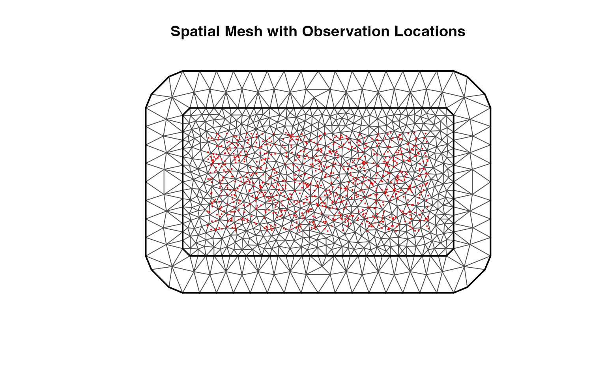
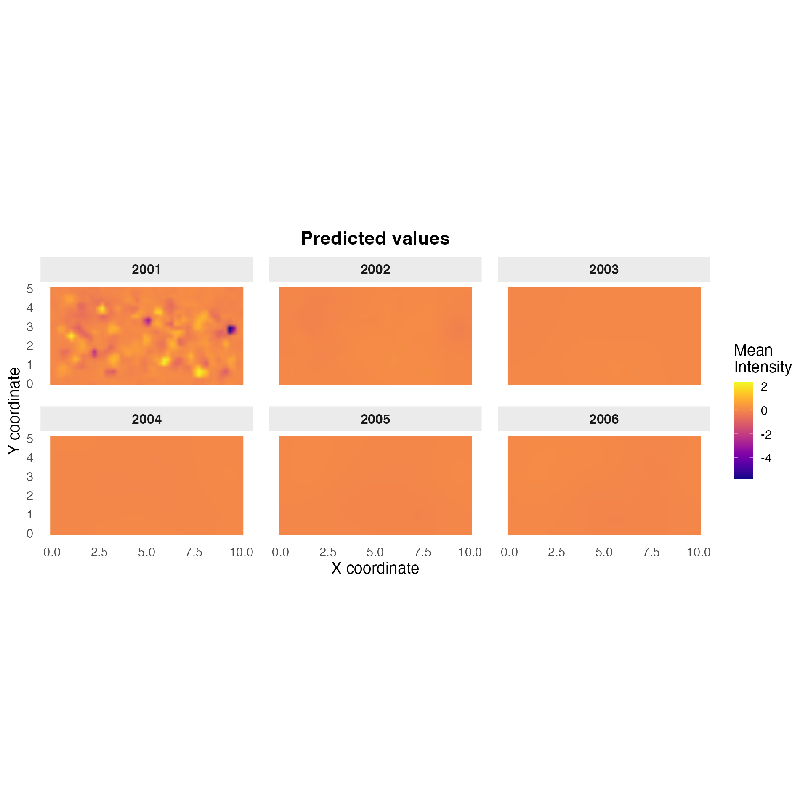
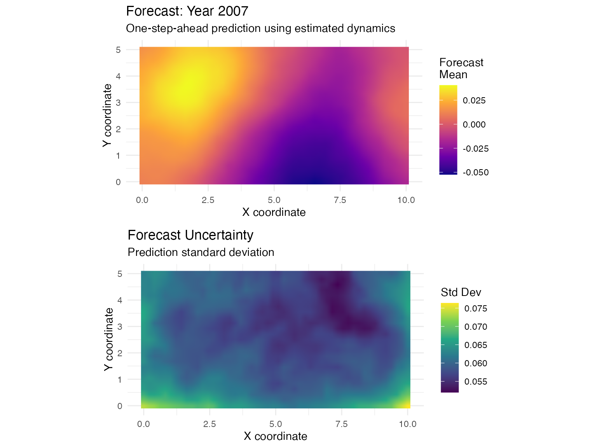

Non-Separable Space-Time Models: Advection-Diffusion in ngme2
Source:vignettes/non-separable-model.Rmd
non-separable-model.RmdIntroduction
Many environmental and physical processes exhibit complex space-time dependencies that cannot be adequately captured by separable models. Phenomena involving transport or advection, for example, air pollution dispersion, ocean currents, disease spread or atmospheric dynamics, fundamentally require non-separable space-time models.
Consider a pollutant plume carried by prevailing winds: the spatial correlation structure actively changes over time as the plume is transported and diffuses. A separable model, which assumes spatial correlation remains constant over time, cannot capture this essential feature. The plume’s spatial pattern at time depends not only on its pattern at time but also on the direction and speed of transport, creating an inherently non-separable space-time covariance structure.
Why Non-Separable Models?
A non-separable space-time covariance cannot be factored as . Traditional space-time geostatistics faces a fundamental computational-flexibility trade-off:
Separable models (e.g., tensor products): Computationally efficient but assume time-invariant spatial correlation patterns. They model spatial and temporal dependencies independently, which is inappropriate when transport mechanisms drive the evolution.
Non-separable covariance functions: Provide the flexibility needed for transport phenomena but traditionally require operations for the full covariance matrix, making them computationally infeasible for large datasets.
The SPDE-based approach in ngme2 resolves this dilemma through sparse precision matrices derived from the finite element discretization of stochastic partial differential equations. This achieves flexibility comparable to non-separable covariance functions while maintaining or better computational complexity, enabling analysis of realistic large-scale environmental datasets.
Advection-Diffusion Processes
The ngme2 implementation is based on stochastic
advection-diffusion equations that describe processes evolving through
two fundamental mechanisms:
Diffusion: Local spreading due to random fluctuations, which creates spatial smoothness according to Matérn covariance properties
Advection: Systematic directional transport due to a velocity field (e.g., wind, water currents), which creates the non-separability by shifting spatial patterns over time
The fundamental SPDE governing the space-time field is:
where:
- controls the spatial range: smaller leads to longer-range spatial correlation
-
controls spatial smoothness: larger
produces smoother fields
- is the time-scale parameter: controls temporal evolution speed
- is the advection velocity vector: drives directional transport
- controls marginal variance: overall variability of the field
- is Gaussian white noise in space and time
The operator is the fractional Matérn operator that generates the spatial Matérn covariance structure, while the advection term introduces the transport mechanism that creates non-separability.
This framework extends work by Lindgren et al. (2011), Sigrist et al. (2015), and Clarotto et al. (2024).
Key Properties
Physical interpretability: All parameters relate directly to observable physical processes (diffusion rate, transport velocity, spatial smoothness), facilitating interpretation and scientific communication
Computational efficiency: The SPDE approach yields sparse precision matrices through finite element methods, enabling tractable inference for datasets with thousands of space-time observations
Marginal spatial structure: Remarkably, the advection term does not affect the Matérn spatial marginal covariance at any fixed time point—the spatial smoothness and range remain unchanged. Advection creates non-separability purely through the temporal evolution mechanism.
Flexible noise: While the SPDE formulation uses Gaussian white noise, ngme2 can accommodate non-Gaussian innovations (NIG, GAL distributions) to model heavy tails and asymmetry in the driving noise
When to Use Non-Separable Models
Use non-separable advection-diffusion models when:
- Directional transport mechanisms are physically present (pollution dispersion, ocean/atmospheric currents, epidemic waves propagating across space)
- Spatial patterns fundamentally change their location over time rather than simply appearing/disappearing in place
- Asymmetric temporal correlation is expected (correlation stronger when looking backward in the transport direction than forward)
- Scientific questions involve quantifying transport rates and directions
Use separable models when:
- No systematic directional movement exists in the physical process
- Spatial correlation patterns remain stationary over time (e.g., fixed monitoring network capturing seasonal cycles)
- Computational constraints favor simpler models for initial exploratory analysis
- Process evolves through local birth-death mechanisms rather than transport
In cases of uncertainty, comparing separable and non-separable models through cross-validation or information criteria can guide model selection.
Simulating an Advection-Diffusion Process
Data Setup
To demonstrate the capabilities of non-separable space-time models in ngme2, we’ll simulate a synthetic dataset with known advection-diffusion dynamics. This allows us to verify that the model can recover the true transport parameters and evaluate the quality of spatial-temporal predictions.
We simulate observations over a rectangular spatial domain across 6 years (2001-2006), with approximately 150 randomly located observations per year. This mimics a monitoring network scenario where sensors are irregularly distributed across the study region.
set.seed(2024)
# Define rectangular spatial domain
domain <- cbind(
x = c(0, 10, 10, 0, 0),
y = c(0, 0, 5, 5, 0)
)
# Temporal setup: 6 years of observations
years <- 2001:2006
n_obs_per_year <- c(150, 140, 160, 145, 155, 150)
year <- rep(years, times = n_obs_per_year)
n_total <- sum(n_obs_per_year)
# Generate random observation locations within domain
x_obs <- runif(n_total, min = 0.5, max = 9.5)
y_obs <- runif(n_total, min = 0.5, max = 4.5)
# Create observation data frame
obs_data <- data.frame(
year = year,
x = x_obs,
y = y_obs,
time_index = year - min(year) + 1
)The configuration of our synthetic dataset is summarized below:
| Characteristic | Value |
|---|---|
| Total observations | 900 |
| Spatial domain | [0, 10] × [0, 5] |
| Temporal extent | 6 years |
| Years | 2001-2006 |
The irregular spatial sampling reflects realistic monitoring scenarios where sensors cannot be placed on a perfect grid due to terrain, accessibility, or other practical constraints. The time_index variable converts calendar years to sequential integers required by the mesh structure.
Creating Finite Element Meshes
The SPDE approach requires discretizing both space and time using finite element meshes. These meshes define the basis functions for representing the continuous space-time field.
Important: Since we will perform forecasting for the
year 2007, we must include it in the temporal mesh. The mesh must always
contain the locations (both spatial and temporal) where predictions will
be performed. For detailed guidance on proper forecasting with the
ngme2 package, refer to the AR
vignette.
# Construct spatial mesh using constrained Delaunay triangulation
mesh_spatial <- fmesher::fm_mesh_2d(
loc.domain = domain, # Mesh boundary
max.edge = c(0.5, 2), # Max triangle edge: inner/outer
cutoff = 0.2, # Minimum distance between vertices
offset = c(0.5, 1.5) # Domain extension for boundary effects
)
# Construct temporal mesh (one-dimensional)
# Including 2007 for forecasting purposes
n_time <- length(unique(obs_data$time_index))
mesh_temporal <- fmesher::fm_mesh_1d(1:(n_time + 1)) # +1 to include 2007The resulting mesh discretization provides the basis functions for the SPDE approximation:
| Component | Value |
|---|---|
| Spatial mesh vertices | 831 |
| Temporal mesh vertices | 7 |
| Total basis functions | 5817 |
The spatial mesh triangulation adapts to the domain geometry while ensuring adequate resolution near observation locations:
plot(mesh_spatial, main = "")
points(obs_data$x, obs_data$y, pch = 16, cex = 0.3, col = "red")
title("Spatial Mesh with Observation Locations")
The spatial mesh uses triangulation to create a flexible discretization that adapts to the domain shape. Key parameters:
-
max.edge: Controls triangle sizes—smaller values give finer resolution but more computational cost -
cutoff: Prevents vertices from being too close, ensuring numerical stability -
offset: Extends mesh beyond domain to minimize boundary effects
The plot shows the triangular mesh structure (grey lines) with observation locations (red points) distributed across the domain. The mesh extends slightly beyond the domain boundary to properly capture the field behavior near edges.
Specifying True Parameters and Generating Data
We now specify the true advection-diffusion parameters and generate synthetic observations. These parameters are chosen to represent a realistic environmental transport scenario.
# Define true SPDE parameters
true_kappa <- 1 # Spatial range parameter κ
true_cc <- 15 # Temporal range parameter
true_alpha <- 2 # Spatial smoothness (α=2 → ν=1)
true_theta_gamma_x <- 2 # Eastward advection velocity
true_theta_gamma_y <- 0 # Northward advection velocity
true_lambda <- 0.1 # Spatial damping parameter
# Calculate derived quantities
true_nu <- true_alpha - 1 # Smoothness parameter ν = α - 1
true_range <- sqrt(8 * true_nu) / true_kappa # Practical correlation range
true_transport_speed <- sqrt(true_theta_gamma_x^2 + true_theta_gamma_y^2)
true_transport_direction <- atan2(true_theta_gamma_y, true_theta_gamma_x) * 180 / piThe true parameters used for simulation are summarized below:
| Parameter | Value | Interpretation |
|---|---|---|
| κ (kappa) | 1.000 | Spatial range control |
| α (alpha) | 2.0 | Spatial smoothness |
| ν (nu) | 1.0 | Matérn smoothness |
| Practical range | 2.83 spatial units | Effective correlation distance |
| Advection velocity | (2.0, 0.0) | Eastward and northward components |
| Transport speed | 2.00 units/year | Magnitude of transport |
| Transport direction | 0.0° from east | Direction of transport |
The advection velocity indicates strong eastward transport with a slight northward component, mimicking prevailing winds or currents. The spatial range of approximately 1.13 units means that locations separated by this distance have correlation around 0.13 under the Matérn model with .
Now we create the model object and simulate observations:
# Specify the true generative model
true_model <- f(
map = list(
obs_data$time_index,
cbind(obs_data$x, obs_data$y)
),
name = "advection_field",
model = spacetime(
mesh = list(mesh_temporal, mesh_spatial),
alpha = true_alpha,
theta_gamma_x = true_theta_gamma_x,
theta_gamma_y = true_theta_gamma_y,
kappa = true_kappa,
cc = true_cc,
lambda = true_lambda,
),
noise = noise_nig(mu = 1, sigma = 4, nu = 20) # Non-Gaussian innovations
)
true_model$A
#> 900 x 5817 sparse Matrix of class "dgCMatrix"
#>
#> [1,] . . . . . . . . . . . . . . . . . . . . . . . . . . . . . . . . . ......
#> [2,] . . . . . . . . . . . . . . . . . . . . . . . . . . . . . . . . . ......
#> [3,] . . . . . . . . . . . . . . . . . . . . . . . . . . . . . . . . . ......
#> [4,] . . . . . . . . . . . . . . . . . . . . . . . . . . . . . . . . . ......
#> [5,] . . . . . . . . . . . . . . . . . . . . . . . . . . . . . . . . . ......
#> [6,] . . . . . . . . . . . . . . . . . . . . . . . . . . . . . . . . . ......
#> [7,] . . . . . . . . . . . . . . . . . . . . . . . . . . . . . . . . . ......
#> [8,] . . . . . . . . . . . . . . . . . . . . . . . . . . . . . . . . . ......
#> [9,] . . . . . . . . . . . . . . . . . . . . . . . . . . . . . . . . . ......
#> [10,] . . . . . . . . . . . . . . . . . . . . . . . . . . . . . . . . . ......
#> [11,] . . . . . . . . . . . . . . . . . . . . . . . . . . . . . . . . . ......
#> [12,] . . . . . . . . . . . . . . . . . . . . . . . . . . . . . . . . . ......
#> [13,] . . . . . . . . . . . . . . . . . . . . . . . . . . . . . . . . . ......
#> [14,] . . . . . . . . . . . . . . . . . . . . . . . . . . . . . . . . . ......
#> [15,] . . . . . . . . . . . . . . . . . . . . . . . . . . . . . . . . . ......
#> [16,] . . . . . . . . . . . . . . . . . . . . . . . . . . . . . . . . . ......
#> [17,] . . . . . . . . . . . . . . . . . . . . . . . . . . . . . . . . . ......
#> [18,] . . . . . . . . . . . . . . . . . . . . . . . . . . . . . . . . . ......
#> [19,] . . . . . . . . . . . . . . . . . . . . . . . . . . . . . . . . . ......
#> [20,] . . . . . . . . . . . . . . . . . . . . . . . . . . . . . . . . . ......
#> [21,] . . . . . . . . . . . . . . . . . . . . . . . . . . . . . . . . . ......
#> [22,] . . . . . . . . . . . . . . . . . . . . . . . . . . . . . . . . . ......
#> [23,] . . . . . . . . . . . . . . . . . . . . . . . . . . . . . . . . . ......
#> [24,] . . . . . . . . . . . . . . . . . . . . . . . . . . . . . . . . . ......
#> [25,] . . . . . . . . . . . . . . . . . . . . . . . . . . . . . . . . . ......
#> [26,] . . . . . . . . . . . . . . . . . . . . . . . . . . . . . . . . . ......
#> [27,] . . . . . . . . . . . . . . . . . . . . . . . . . . . . . . . . . ......
#> [28,] . . . . . . . . . . . . . . . . . . . . . . . . . . . . . . . . . ......
#> [29,] . . . . . . . . . . . . . . . . . . . . . . . . . . . . . . . . . ......
#> [30,] . . . . . . . . . . . . . . . . . . . . . . . . . . . . . . . . . ......
#> [31,] . . . . . . . . . . . . . . . . . . . . . . . . . . . . . . . . . ......
#> [32,] . . . . . . . . . . . . . . . . . . . . . . . . . . . . . . . . . ......
#> [33,] . . . . . . . . . . . . . . . . . . . . . . . . . . . . . . . . . ......
#> [34,] . . . . . . . . . . . . . . . . . . . . . . . . . . . . . . . . . ......
#> [35,] . . . . . . . . . . . . . . . . . . . . . . . . . . . . . . . . . ......
#> [36,] . . . . . . . . . . . . . . . . . . . . . . . . . . . . . . . . . ......
#> [37,] . . . . . . . . . . . . . . . . . . . . . . . . . . . . . . . . . ......
#> [38,] . . . . . . . . . . . . . . . . . . . . . . . . . . . . . . . . . ......
#> [39,] . . . . . . . . . . . . . . . . . . . . . . . . . . . . . . . . . ......
#> [40,] . . . . . . . . . . . . . . . . . . . . . . . . . . . . . . . . . ......
#> [41,] . . . . . . . . . . . . . . . . . . . . . . . . . . . . . . . . . ......
#> [42,] . . . . . . . . . . . . . . . . . . . . . . . . . . . . . . . . . ......
#> [43,] . . . . . . . . . . . . . . . . . . . . . . . . . . . . . . . . . ......
#> [44,] . . . . . . . . . . . . . . . . . . . . . . . . . . . . . . . . . ......
#> [45,] . . . . . . . . . . . . . . . . . . . . . . . . . . . . . . . . . ......
#> [46,] . . . . . . . . . . . . . . . . . . . . . . . . . . . . . . . . . ......
#> [47,] . . . . . . . . . . . . . . . . . . . . . . . . . . . . . . . . . ......
#> [48,] . . . . . . . . . . . . . . . . . . . . . . . . . . . . . . . . . ......
#> [49,] . . . . . . . . . . . . . . . . . . . . . . . . . . . . . . . . . ......
#> [50,] . . . . . . . . . . . . . . . . . . . . . . . . . . . . . . . . . ......
#> [51,] . . . . . . . . . . . . . . . . . . . . . . . . . . . . . . . . . ......
#> [52,] . . . . . . . . . . . . . . . . . . . . . . . . . . . . . . . . . ......
#> [53,] . . . . . . . . . . . . . . . . . . . . . . . . . . . . . . . . . ......
#> [54,] . . . . . . . . . . . . . . . . . . . . . . . . . . . . . . . . . ......
#> [55,] . . . . . . . . . . . . . . . . . . . . . . . . . . . . . . . . . ......
#> [56,] . . . . . . . . . . . . . . . . . . . . . . . . . . . . . . . . . ......
#> [57,] . . . . . . . . . . . . . . . . . . . . . . . . . . . . . . . . . ......
#> [58,] . . . . . . . . . . . . . . . . . . . . . . . . . . . . . . . . . ......
#> [59,] . . . . . . . . . . . . . . . . . . . . . . . . . . . . . . . . . ......
#> [60,] . . . . . . . . . . . . . . . . . . . . . . . . . . . . . . . . . ......
#> [61,] . . . . . . . . . . . . . . . . . . . . . . . . . . . . . . . . . ......
#> [62,] . . . . . . . . . . . . . . . . . . . . . . . . . . . . . . . . . ......
#> [63,] . . . . . . . . . . . . . . . . . . . . . . . . . . . . . . . . . ......
#> [64,] . . . . . . . . . . . . . . . . . . . . . . . . . . . . . . . . . ......
#> [65,] . . . . . . . . . . . . . . . . . . . . . . . . . . . . . . . . . ......
#> [66,] . . . . . . . . . . . . . . . . . . . . . . . . . . . . . . . . . ......
#> [67,] . . . . . . . . . . . . . . . . . . . . . . . . . . . . . . . . . ......
#> [68,] . . . . . . . . . . . . . . . . . . . . . . . . . . . . . . . . . ......
#> [69,] . . . . . . . . . . . . . . . . . . . . . . . . . . . . . . . . . ......
#> [70,] . . . . . . . . . . . . . . . . . . . . . . . . . . . . . . . . . ......
#> [71,] . . . . . . . . . . . . . . . . . . . . . . . . . . . . . . . . . ......
#> [72,] . . . . . . . . . . . . . . . . . . . . . . . . . . . . . . . . . ......
#> [73,] . . . . . . . . . . . . . . . . . . . . . . . . . . . . . . . . . ......
#> [74,] . . . . . . . . . . . . . . . . . . . . . . . . . . . . . . . . . ......
#> [75,] . . . . . . . . . . . . . . . . . . . . . . . . . . . . . . . . . ......
#> [76,] . . . . . . . . . . . . . . . . . . . . . . . . . . . . . . . . . ......
#> [77,] . . . . . . . . . . . . . . . . . . . . . . . . . . . . . . . . . ......
#> [78,] . . . . . . . . . . . . . . . . . . . . . . . . . . . . . . . . . ......
#> [79,] . . . . . . . . . . . . . . . . . . . . . . . . . . . . . . . . . ......
#> [80,] . . . . . . . . . . . . . . . . . . . . . . . . . . . . . . . . . ......
#> [81,] . . . . . . . . . . . . . . . . . . . . . . . . . . . . . . . . . ......
#> [82,] . . . . . . . . . . . . . . . . . . . . . . . . . . . . . . . . . ......
#> [83,] . . . . . . . . . . . . . . . . . . . . . . . . . . . . . . . . . ......
#> [84,] . . . . . . . . . . . . . . . . . . . . . . . . . . . . . . . . . ......
#> [85,] . . . . . . . . . . . . . . . . . . . . . . . . . . . . . . . . . ......
#> [86,] . . . . . . . . . . . . . . . . . . . . . . . . . . . . . . . . . ......
#> [87,] . . . . . . . . . . . . . . . . . . . . . . . . . . . . . . . . . ......
#> [88,] . . . . . . . . . . . . . . . . . . . . . . . . . . . . . . . . . ......
#> [89,] . . . . . . . . . . . . . . . . . . . . . . . . . . . . . . . . . ......
#> [90,] . . . . . . . . . . . . . . . . . . . . . . . . . . . . . . . . . ......
#> [91,] . . . . . . . . . . . . . . . . . . . . . . . . . . . . . . . . . ......
#> [92,] . . . . . . . . . . . . . . . . . . . . . . . . . . . . . . . . . ......
#> [93,] . . . . . . . . . . . . . . . . . . . . . . . . . . . . . . . . . ......
#> [94,] . . . . . . . . . . . . . . . . . . . . . . . . . . . . . . . . . ......
#> [95,] . . . . . . . . . . . . . . . . . . . . . . . . . . . . . . . . . ......
#> [96,] . . . . . . . . . . . . . . . . . . . . . . . . . . . . . . . . . ......
#> [97,] . . . . . . . . . . . . . . . . . . . . . . . . . . . . . . . . . ......
#> [98,] . . . . . . . . . . . . . . . . . . . . . . . . . . . . . . . . . ......
#> [99,] . . . . . . . . . . . . . . . . . . . . . . . . . . . . . . . . . ......
#> [100,] . . . . . . . . . . . . . . . . . . . . . . . . . . . . . . . . . ......
#> [101,] . . . . . . . . . . . . . . . . . . . . . . . . . . . . . . . . . ......
#> [102,] . . . . . . . . . . . . . . . . . . . . . . . . . . . . . . . . . ......
#> [103,] . . . . . . . . . . . . . . . . . . . . . . . . . . . . . . . . . ......
#> [104,] . . . . . . . . . . . . . . . . . . . . . . . . . . . . . . . . . ......
#> [105,] . . . . . . . . . . . . . . . . . . . . . . . . . . . . . . . . . ......
#> [106,] . . . . . . . . . . . . . . . . . . . . . . . . . . . . . . . . . ......
#> [107,] . . . . . . . . . . . . . . . . . . . . . . . . . . . . . . . . . ......
#> [108,] . . . . . . . . . . . . . . . . . . . . . . . . . . . . . . . . . ......
#> [109,] . . . . . . . . . . . . . . . . . . . . . . . . . . . . . . . . . ......
#> [110,] . . . . . . . . . . . . . . . . . . . . . . . . . . . . . . . . . ......
#> [111,] . . . . . . . . . . . . . . . . . . . . . . . . . . . . . . . . . ......
#> [112,] . . . . . . . . . . . . . . . . . . . . . . . . . . . . . . . . . ......
#> [113,] . . . . . . . . . . . . . . . . . . . . . . . . . . . . . . . . . ......
#> [114,] . . . . . . . . . . . . . . . . . . . . . . . . . . . . . . . . . ......
#> [115,] . . . . . . . . . . . . . . . . . . . . . . . . . . . . . . . . . ......
#> [116,] . . . . . . . . . . . . . . . . . . . . . . . . . . . . . . . . . ......
#> [117,] . . . . . . . . . . . . . . . . . . . . . . . . . . . . . . . . . ......
#> [118,] . . . . . . . . . . . . . . . . . . . . . . . . . . . . . . . . . ......
#> [119,] . . . . . . . . . . . . . . . . . . . . . . . . . . . . . . . . . ......
#> [120,] . . . . . . . . . . . . . . . . . . . . . . . . . . . . . . . . . ......
#> [121,] . . . . . . . . . . . . . . . . . . . . . . . . . . . . . . . . . ......
#> [122,] . . . . . . . . . . . . . . . . . . . . . . . . . . . . . . . . . ......
#> [123,] . . . . . . . . . . . . . . . . . . . . . . . . . . . . . . . . . ......
#> [124,] . . . . . . . . . . . . . . . . . . . . . . . . . . . . . . . . . ......
#> [125,] . . . . . . . . . . . . . . . . . . . . . . . . . . . . . . . . . ......
#> [126,] . . . . . . . . . . . . . . . . . . . . . . . . . . . . . . . . . ......
#> [127,] . . . . . . . . . . . . . . . . . . . . . . . . . . . . . . . . . ......
#> [128,] . . . . . . . . . . . . . . . . . . . . . . . . . . . . . . . . . ......
#> [129,] . . . . . . . . . . . . . . . . . . . . . . . . . . . . . . . . . ......
#> [130,] . . . . . . . . . . . . . . . . . . . . . . . . . . . . . . . . . ......
#> [131,] . . . . . . . . . . . . . . . . . . . . . . . . . . . . . . . . . ......
#> [132,] . . . . . . . . . . . . . . . . . . . . . . . . . . . . . . . . . ......
#> [133,] . . . . . . . . . . . . . . . . . . . . . . . . . . . . . . . . . ......
#> [134,] . . . . . . . . . . . . . . . . . . . . . . . . . . . . . . . . . ......
#> [135,] . . . . . . . . . . . . . . . . . . . . . . . . . . . . . . . . . ......
#> [136,] . . . . . . . . . . . . . . . . . . . . . . . . . . . . . . . . . ......
#> [137,] . . . . . . . . . . . . . . . . . . . . . . . . . . . . . . . . . ......
#> [138,] . . . . . . . . . . . . . . . . . . . . . . . . . . . . . . . . . ......
#> [139,] . . . . . . . . . . . . . . . . . . . . . . . . . . . . . . . . . ......
#> [140,] . . . . . . . . . . . . . . . . . . . . . . . . . . . . . . . . . ......
#> [141,] . . . . . . . . . . . . . . . . . . . . . . . . . . . . . . . . . ......
#> [142,] . . . . . . . . . . . . . . . . . . . . . . . . . . . . . . . . . ......
#> [143,] . . . . . . . . . . . . . . . . . . . . . . . . . . . . . . . . . ......
#> [144,] . . . . . . . . . . . . . . . . . . . . . . . . . . . . . . . . . ......
#> [145,] . . . . . . . . . . . . . . . . . . . . . . . . . . . . . . . . . ......
#> [146,] . . . . . . . . . . . . . . . . . . . . . . . . . . . . . . . . . ......
#> [147,] . . . . . . . . . . . . . . . . . . . . . . . . . . . . . . . . . ......
#> [148,] . . . . . . . . . . . . . . . . . . . . . . . . . . . . . . . . . ......
#> [149,] . . . . . . . . . . . . . . . . . . . . . . . . . . . . . . . . . ......
#> [150,] . . . . . . . . . . . . . . . . . . . . . . . . . . . . . . . . . ......
#> [151,] . . . . . . . . . . . . . . . . . . . . . . . . . . . . . . . . . ......
#> [152,] . . . . . . . . . . . . . . . . . . . . . . . . . . . . . . . . . ......
#> [153,] . . . . . . . . . . . . . . . . . . . . . . . . . . . . . . . . . ......
#> [154,] . . . . . . . . . . . . . . . . . . . . . . . . . . . . . . . . . ......
#> [155,] . . . . . . . . . . . . . . . . . . . . . . . . . . . . . . . . . ......
#> [156,] . . . . . . . . . . . . . . . . . . . . . . . . . . . . . . . . . ......
#> [157,] . . . . . . . . . . . . . . . . . . . . . . . . . . . . . . . . . ......
#> [158,] . . . . . . . . . . . . . . . . . . . . . . . . . . . . . . . . . ......
#> [159,] . . . . . . . . . . . . . . . . . . . . . . . . . . . . . . . . . ......
#> [160,] . . . . . . . . . . . . . . . . . . . . . . . . . . . . . . . . . ......
#> [161,] . . . . . . . . . . . . . . . . . . . . . . . . . . . . . . . . . ......
#> [162,] . . . . . . . . . . . . . . . . . . . . . . . . . . . . . . . . . ......
#> [163,] . . . . . . . . . . . . . . . . . . . . . . . . . . . . . . . . . ......
#> [164,] . . . . . . . . . . . . . . . . . . . . . . . . . . . . . . . . . ......
#> [165,] . . . . . . . . . . . . . . . . . . . . . . . . . . . . . . . . . ......
#> [166,] . . . . . . . . . . . . . . . . . . . . . . . . . . . . . . . . . ......
#> [167,] . . . . . . . . . . . . . . . . . . . . . . . . . . . . . . . . . ......
#> [168,] . . . . . . . . . . . . . . . . . . . . . . . . . . . . . . . . . ......
#> [169,] . . . . . . . . . . . . . . . . . . . . . . . . . . . . . . . . . ......
#> [170,] . . . . . . . . . . . . . . . . . . . . . . . . . . . . . . . . . ......
#> [171,] . . . . . . . . . . . . . . . . . . . . . . . . . . . . . . . . . ......
#> [172,] . . . . . . . . . . . . . . . . . . . . . . . . . . . . . . . . . ......
#> [173,] . . . . . . . . . . . . . . . . . . . . . . . . . . . . . . . . . ......
#> [174,] . . . . . . . . . . . . . . . . . . . . . . . . . . . . . . . . . ......
#> [175,] . . . . . . . . . . . . . . . . . . . . . . . . . . . . . . . . . ......
#> [176,] . . . . . . . . . . . . . . . . . . . . . . . . . . . . . . . . . ......
#> [177,] . . . . . . . . . . . . . . . . . . . . . . . . . . . . . . . . . ......
#> [178,] . . . . . . . . . . . . . . . . . . . . . . . . . . . . . . . . . ......
#> [179,] . . . . . . . . . . . . . . . . . . . . . . . . . . . . . . . . . ......
#> [180,] . . . . . . . . . . . . . . . . . . . . . . . . . . . . . . . . . ......
#> [181,] . . . . . . . . . . . . . . . . . . . . . . . . . . . . . . . . . ......
#> [182,] . . . . . . . . . . . . . . . . . . . . . . . . . . . . . . . . . ......
#> [183,] . . . . . . . . . . . . . . . . . . . . . . . . . . . . . . . . . ......
#> [184,] . . . . . . . . . . . . . . . . . . . . . . . . . . . . . . . . . ......
#> [185,] . . . . . . . . . . . . . . . . . . . . . . . . . . . . . . . . . ......
#> [186,] . . . . . . . . . . . . . . . . . . . . . . . . . . . . . . . . . ......
#> [187,] . . . . . . . . . . . . . . . . . . . . . . . . . . . . . . . . . ......
#> [188,] . . . . . . . . . . . . . . . . . . . . . . . . . . . . . . . . . ......
#> [189,] . . . . . . . . . . . . . . . . . . . . . . . . . . . . . . . . . ......
#> [190,] . . . . . . . . . . . . . . . . . . . . . . . . . . . . . . . . . ......
#> [191,] . . . . . . . . . . . . . . . . . . . . . . . . . . . . . . . . . ......
#> [192,] . . . . . . . . . . . . . . . . . . . . . . . . . . . . . . . . . ......
#> [193,] . . . . . . . . . . . . . . . . . . . . . . . . . . . . . . . . . ......
#> [194,] . . . . . . . . . . . . . . . . . . . . . . . . . . . . . . . . . ......
#> [195,] . . . . . . . . . . . . . . . . . . . . . . . . . . . . . . . . . ......
#> [196,] . . . . . . . . . . . . . . . . . . . . . . . . . . . . . . . . . ......
#> [197,] . . . . . . . . . . . . . . . . . . . . . . . . . . . . . . . . . ......
#> [198,] . . . . . . . . . . . . . . . . . . . . . . . . . . . . . . . . . ......
#> [199,] . . . . . . . . . . . . . . . . . . . . . . . . . . . . . . . . . ......
#> [200,] . . . . . . . . . . . . . . . . . . . . . . . . . . . . . . . . . ......
#> [201,] . . . . . . . . . . . . . . . . . . . . . . . . . . . . . . . . . ......
#> [202,] . . . . . . . . . . . . . . . . . . . . . . . . . . . . . . . . . ......
#> [203,] . . . . . . . . . . . . . . . . . . . . . . . . . . . . . . . . . ......
#> [204,] . . . . . . . . . . . . . . . . . . . . . . . . . . . . . . . . . ......
#> [205,] . . . . . . . . . . . . . . . . . . . . . . . . . . . . . . . . . ......
#> [206,] . . . . . . . . . . . . . . . . . . . . . . . . . . . . . . . . . ......
#> [207,] . . . . . . . . . . . . . . . . . . . . . . . . . . . . . . . . . ......
#> [208,] . . . . . . . . . . . . . . . . . . . . . . . . . . . . . . . . . ......
#> [209,] . . . . . . . . . . . . . . . . . . . . . . . . . . . . . . . . . ......
#> [210,] . . . . . . . . . . . . . . . . . . . . . . . . . . . . . . . . . ......
#> [211,] . . . . . . . . . . . . . . . . . . . . . . . . . . . . . . . . . ......
#> [212,] . . . . . . . . . . . . . . . . . . . . . . . . . . . . . . . . . ......
#> [213,] . . . . . . . . . . . . . . . . . . . . . . . . . . . . . . . . . ......
#> [214,] . . . . . . . . . . . . . . . . . . . . . . . . . . . . . . . . . ......
#> [215,] . . . . . . . . . . . . . . . . . . . . . . . . . . . . . . . . . ......
#> [216,] . . . . . . . . . . . . . . . . . . . . . . . . . . . . . . . . . ......
#> [217,] . . . . . . . . . . . . . . . . . . . . . . . . . . . . . . . . . ......
#> [218,] . . . . . . . . . . . . . . . . . . . . . . . . . . . . . . . . . ......
#> [219,] . . . . . . . . . . . . . . . . . . . . . . . . . . . . . . . . . ......
#> [220,] . . . . . . . . . . . . . . . . . . . . . . . . . . . . . . . . . ......
#> [221,] . . . . . . . . . . . . . . . . . . . . . . . . . . . . . . . . . ......
#> [222,] . . . . . . . . . . . . . . . . . . . . . . . . . . . . . . . . . ......
#> [223,] . . . . . . . . . . . . . . . . . . . . . . . . . . . . . . . . . ......
#> [224,] . . . . . . . . . . . . . . . . . . . . . . . . . . . . . . . . . ......
#> [225,] . . . . . . . . . . . . . . . . . . . . . . . . . . . . . . . . . ......
#> [226,] . . . . . . . . . . . . . . . . . . . . . . . . . . . . . . . . . ......
#> [227,] . . . . . . . . . . . . . . . . . . . . . . . . . . . . . . . . . ......
#> [228,] . . . . . . . . . . . . . . . . . . . . . . . . . . . . . . . . . ......
#> [229,] . . . . . . . . . . . . . . . . . . . . . . . . . . . . . . . . . ......
#> [230,] . . . . . . . . . . . . . . . . . . . . . . . . . . . . . . . . . ......
#> [231,] . . . . . . . . . . . . . . . . . . . . . . . . . . . . . . . . . ......
#> [232,] . . . . . . . . . . . . . . . . . . . . . . . . . . . . . . . . . ......
#> [233,] . . . . . . . . . . . . . . . . . . . . . . . . . . . . . . . . . ......
#> [234,] . . . . . . . . . . . . . . . . . . . . . . . . . . . . . . . . . ......
#> [235,] . . . . . . . . . . . . . . . . . . . . . . . . . . . . . . . . . ......
#> [236,] . . . . . . . . . . . . . . . . . . . . . . . . . . . . . . . . . ......
#> [237,] . . . . . . . . . . . . . . . . . . . . . . . . . . . . . . . . . ......
#> [238,] . . . . . . . . . . . . . . . . . . . . . . . . . . . . . . . . . ......
#> [239,] . . . . . . . . . . . . . . . . . . . . . . . . . . . . . . . . . ......
#> [240,] . . . . . . . . . . . . . . . . . . . . . . . . . . . . . . . . . ......
#> [241,] . . . . . . . . . . . . . . . . . . . . . . . . . . . . . . . . . ......
#> [242,] . . . . . . . . . . . . . . . . . . . . . . . . . . . . . . . . . ......
#> [243,] . . . . . . . . . . . . . . . . . . . . . . . . . . . . . . . . . ......
#> [244,] . . . . . . . . . . . . . . . . . . . . . . . . . . . . . . . . . ......
#> [245,] . . . . . . . . . . . . . . . . . . . . . . . . . . . . . . . . . ......
#> [246,] . . . . . . . . . . . . . . . . . . . . . . . . . . . . . . . . . ......
#> [247,] . . . . . . . . . . . . . . . . . . . . . . . . . . . . . . . . . ......
#> [248,] . . . . . . . . . . . . . . . . . . . . . . . . . . . . . . . . . ......
#> [249,] . . . . . . . . . . . . . . . . . . . . . . . . . . . . . . . . . ......
#> [250,] . . . . . . . . . . . . . . . . . . . . . . . . . . . . . . . . . ......
#> [251,] . . . . . . . . . . . . . . . . . . . . . . . . . . . . . . . . . ......
#> [252,] . . . . . . . . . . . . . . . . . . . . . . . . . . . . . . . . . ......
#> [253,] . . . . . . . . . . . . . . . . . . . . . . . . . . . . . . . . . ......
#> [254,] . . . . . . . . . . . . . . . . . . . . . . . . . . . . . . . . . ......
#> [255,] . . . . . . . . . . . . . . . . . . . . . . . . . . . . . . . . . ......
#> [256,] . . . . . . . . . . . . . . . . . . . . . . . . . . . . . . . . . ......
#> [257,] . . . . . . . . . . . . . . . . . . . . . . . . . . . . . . . . . ......
#> [258,] . . . . . . . . . . . . . . . . . . . . . . . . . . . . . . . . . ......
#> [259,] . . . . . . . . . . . . . . . . . . . . . . . . . . . . . . . . . ......
#> [260,] . . . . . . . . . . . . . . . . . . . . . . . . . . . . . . . . . ......
#> [261,] . . . . . . . . . . . . . . . . . . . . . . . . . . . . . . . . . ......
#> [262,] . . . . . . . . . . . . . . . . . . . . . . . . . . . . . . . . . ......
#> [263,] . . . . . . . . . . . . . . . . . . . . . . . . . . . . . . . . . ......
#> [264,] . . . . . . . . . . . . . . . . . . . . . . . . . . . . . . . . . ......
#> [265,] . . . . . . . . . . . . . . . . . . . . . . . . . . . . . . . . . ......
#> [266,] . . . . . . . . . . . . . . . . . . . . . . . . . . . . . . . . . ......
#> [267,] . . . . . . . . . . . . . . . . . . . . . . . . . . . . . . . . . ......
#> [268,] . . . . . . . . . . . . . . . . . . . . . . . . . . . . . . . . . ......
#> [269,] . . . . . . . . . . . . . . . . . . . . . . . . . . . . . . . . . ......
#> [270,] . . . . . . . . . . . . . . . . . . . . . . . . . . . . . . . . . ......
#> [271,] . . . . . . . . . . . . . . . . . . . . . . . . . . . . . . . . . ......
#> [272,] . . . . . . . . . . . . . . . . . . . . . . . . . . . . . . . . . ......
#> [273,] . . . . . . . . . . . . . . . . . . . . . . . . . . . . . . . . . ......
#> [274,] . . . . . . . . . . . . . . . . . . . . . . . . . . . . . . . . . ......
#> [275,] . . . . . . . . . . . . . . . . . . . . . . . . . . . . . . . . . ......
#> [276,] . . . . . . . . . . . . . . . . . . . . . . . . . . . . . . . . . ......
#> [277,] . . . . . . . . . . . . . . . . . . . . . . . . . . . . . . . . . ......
#> [278,] . . . . . . . . . . . . . . . . . . . . . . . . . . . . . . . . . ......
#> [279,] . . . . . . . . . . . . . . . . . . . . . . . . . . . . . . . . . ......
#> [280,] . . . . . . . . . . . . . . . . . . . . . . . . . . . . . . . . . ......
#> [281,] . . . . . . . . . . . . . . . . . . . . . . . . . . . . . . . . . ......
#> [282,] . . . . . . . . . . . . . . . . . . . . . . . . . . . . . . . . . ......
#> [283,] . . . . . . . . . . . . . . . . . . . . . . . . . . . . . . . . . ......
#> [284,] . . . . . . . . . . . . . . . . . . . . . . . . . . . . . . . . . ......
#> [285,] . . . . . . . . . . . . . . . . . . . . . . . . . . . . . . . . . ......
#> [286,] . . . . . . . . . . . . . . . . . . . . . . . . . . . . . . . . . ......
#> [287,] . . . . . . . . . . . . . . . . . . . . . . . . . . . . . . . . . ......
#> [288,] . . . . . . . . . . . . . . . . . . . . . . . . . . . . . . . . . ......
#> [289,] . . . . . . . . . . . . . . . . . . . . . . . . . . . . . . . . . ......
#> [290,] . . . . . . . . . . . . . . . . . . . . . . . . . . . . . . . . . ......
#> [291,] . . . . . . . . . . . . . . . . . . . . . . . . . . . . . . . . . ......
#> [292,] . . . . . . . . . . . . . . . . . . . . . . . . . . . . . . . . . ......
#> [293,] . . . . . . . . . . . . . . . . . . . . . . . . . . . . . . . . . ......
#> [294,] . . . . . . . . . . . . . . . . . . . . . . . . . . . . . . . . . ......
#> [295,] . . . . . . . . . . . . . . . . . . . . . . . . . . . . . . . . . ......
#> [296,] . . . . . . . . . . . . . . . . . . . . . . . . . . . . . . . . . ......
#> [297,] . . . . . . . . . . . . . . . . . . . . . . . . . . . . . . . . . ......
#> [298,] . . . . . . . . . . . . . . . . . . . . . . . . . . . . . . . . . ......
#> [299,] . . . . . . . . . . . . . . . . . . . . . . . . . . . . . . . . . ......
#> [300,] . . . . . . . . . . . . . . . . . . . . . . . . . . . . . . . . . ......
#> [301,] . . . . . . . . . . . . . . . . . . . . . . . . . . . . . . . . . ......
#> [302,] . . . . . . . . . . . . . . . . . . . . . . . . . . . . . . . . . ......
#> [303,] . . . . . . . . . . . . . . . . . . . . . . . . . . . . . . . . . ......
#> [304,] . . . . . . . . . . . . . . . . . . . . . . . . . . . . . . . . . ......
#> [305,] . . . . . . . . . . . . . . . . . . . . . . . . . . . . . . . . . ......
#> [306,] . . . . . . . . . . . . . . . . . . . . . . . . . . . . . . . . . ......
#> [307,] . . . . . . . . . . . . . . . . . . . . . . . . . . . . . . . . . ......
#> [308,] . . . . . . . . . . . . . . . . . . . . . . . . . . . . . . . . . ......
#> [309,] . . . . . . . . . . . . . . . . . . . . . . . . . . . . . . . . . ......
#> [310,] . . . . . . . . . . . . . . . . . . . . . . . . . . . . . . . . . ......
#> [311,] . . . . . . . . . . . . . . . . . . . . . . . . . . . . . . . . . ......
#> [312,] . . . . . . . . . . . . . . . . . . . . . . . . . . . . . . . . . ......
#> [313,] . . . . . . . . . . . . . . . . . . . . . . . . . . . . . . . . . ......
#> [314,] . . . . . . . . . . . . . . . . . . . . . . . . . . . . . . . . . ......
#> [315,] . . . . . . . . . . . . . . . . . . . . . . . . . . . . . . . . . ......
#> [316,] . . . . . . . . . . . . . . . . . . . . . . . . . . . . . . . . . ......
#> [317,] . . . . . . . . . . . . . . . . . . . . . . . . . . . . . . . . . ......
#> [318,] . . . . . . . . . . . . . . . . . . . . . . . . . . . . . . . . . ......
#> [319,] . . . . . . . . . . . . . . . . . . . . . . . . . . . . . . . . . ......
#> [320,] . . . . . . . . . . . . . . . . . . . . . . . . . . . . . . . . . ......
#> [321,] . . . . . . . . . . . . . . . . . . . . . . . . . . . . . . . . . ......
#> [322,] . . . . . . . . . . . . . . . . . . . . . . . . . . . . . . . . . ......
#> [323,] . . . . . . . . . . . . . . . . . . . . . . . . . . . . . . . . . ......
#> [324,] . . . . . . . . . . . . . . . . . . . . . . . . . . . . . . . . . ......
#> [325,] . . . . . . . . . . . . . . . . . . . . . . . . . . . . . . . . . ......
#> [326,] . . . . . . . . . . . . . . . . . . . . . . . . . . . . . . . . . ......
#> [327,] . . . . . . . . . . . . . . . . . . . . . . . . . . . . . . . . . ......
#> [328,] . . . . . . . . . . . . . . . . . . . . . . . . . . . . . . . . . ......
#> [329,] . . . . . . . . . . . . . . . . . . . . . . . . . . . . . . . . . ......
#> [330,] . . . . . . . . . . . . . . . . . . . . . . . . . . . . . . . . . ......
#> [331,] . . . . . . . . . . . . . . . . . . . . . . . . . . . . . . . . . ......
#> [332,] . . . . . . . . . . . . . . . . . . . . . . . . . . . . . . . . . ......
#> [333,] . . . . . . . . . . . . . . . . . . . . . . . . . . . . . . . . . ......
#> [334,] . . . . . . . . . . . . . . . . . . . . . . . . . . . . . . . . . ......
#> [335,] . . . . . . . . . . . . . . . . . . . . . . . . . . . . . . . . . ......
#> [336,] . . . . . . . . . . . . . . . . . . . . . . . . . . . . . . . . . ......
#> [337,] . . . . . . . . . . . . . . . . . . . . . . . . . . . . . . . . . ......
#> [338,] . . . . . . . . . . . . . . . . . . . . . . . . . . . . . . . . . ......
#> [339,] . . . . . . . . . . . . . . . . . . . . . . . . . . . . . . . . . ......
#> [340,] . . . . . . . . . . . . . . . . . . . . . . . . . . . . . . . . . ......
#> [341,] . . . . . . . . . . . . . . . . . . . . . . . . . . . . . . . . . ......
#> [342,] . . . . . . . . . . . . . . . . . . . . . . . . . . . . . . . . . ......
#> [343,] . . . . . . . . . . . . . . . . . . . . . . . . . . . . . . . . . ......
#> [344,] . . . . . . . . . . . . . . . . . . . . . . . . . . . . . . . . . ......
#> [345,] . . . . . . . . . . . . . . . . . . . . . . . . . . . . . . . . . ......
#> [346,] . . . . . . . . . . . . . . . . . . . . . . . . . . . . . . . . . ......
#> [347,] . . . . . . . . . . . . . . . . . . . . . . . . . . . . . . . . . ......
#> [348,] . . . . . . . . . . . . . . . . . . . . . . . . . . . . . . . . . ......
#> [349,] . . . . . . . . . . . . . . . . . . . . . . . . . . . . . . . . . ......
#> [350,] . . . . . . . . . . . . . . . . . . . . . . . . . . . . . . . . . ......
#> [351,] . . . . . . . . . . . . . . . . . . . . . . . . . . . . . . . . . ......
#> [352,] . . . . . . . . . . . . . . . . . . . . . . . . . . . . . . . . . ......
#> [353,] . . . . . . . . . . . . . . . . . . . . . . . . . . . . . . . . . ......
#> [354,] . . . . . . . . . . . . . . . . . . . . . . . . . . . . . . . . . ......
#> [355,] . . . . . . . . . . . . . . . . . . . . . . . . . . . . . . . . . ......
#> [356,] . . . . . . . . . . . . . . . . . . . . . . . . . . . . . . . . . ......
#> [357,] . . . . . . . . . . . . . . . . . . . . . . . . . . . . . . . . . ......
#> [358,] . . . . . . . . . . . . . . . . . . . . . . . . . . . . . . . . . ......
#> [359,] . . . . . . . . . . . . . . . . . . . . . . . . . . . . . . . . . ......
#> [360,] . . . . . . . . . . . . . . . . . . . . . . . . . . . . . . . . . ......
#> [361,] . . . . . . . . . . . . . . . . . . . . . . . . . . . . . . . . . ......
#> [362,] . . . . . . . . . . . . . . . . . . . . . . . . . . . . . . . . . ......
#> [363,] . . . . . . . . . . . . . . . . . . . . . . . . . . . . . . . . . ......
#> [364,] . . . . . . . . . . . . . . . . . . . . . . . . . . . . . . . . . ......
#> [365,] . . . . . . . . . . . . . . . . . . . . . . . . . . . . . . . . . ......
#> [366,] . . . . . . . . . . . . . . . . . . . . . . . . . . . . . . . . . ......
#> [367,] . . . . . . . . . . . . . . . . . . . . . . . . . . . . . . . . . ......
#> [368,] . . . . . . . . . . . . . . . . . . . . . . . . . . . . . . . . . ......
#> [369,] . . . . . . . . . . . . . . . . . . . . . . . . . . . . . . . . . ......
#> [370,] . . . . . . . . . . . . . . . . . . . . . . . . . . . . . . . . . ......
#> [371,] . . . . . . . . . . . . . . . . . . . . . . . . . . . . . . . . . ......
#> [372,] . . . . . . . . . . . . . . . . . . . . . . . . . . . . . . . . . ......
#> [373,] . . . . . . . . . . . . . . . . . . . . . . . . . . . . . . . . . ......
#> [374,] . . . . . . . . . . . . . . . . . . . . . . . . . . . . . . . . . ......
#> [375,] . . . . . . . . . . . . . . . . . . . . . . . . . . . . . . . . . ......
#> [376,] . . . . . . . . . . . . . . . . . . . . . . . . . . . . . . . . . ......
#> [377,] . . . . . . . . . . . . . . . . . . . . . . . . . . . . . . . . . ......
#> [378,] . . . . . . . . . . . . . . . . . . . . . . . . . . . . . . . . . ......
#> [379,] . . . . . . . . . . . . . . . . . . . . . . . . . . . . . . . . . ......
#> [380,] . . . . . . . . . . . . . . . . . . . . . . . . . . . . . . . . . ......
#> [381,] . . . . . . . . . . . . . . . . . . . . . . . . . . . . . . . . . ......
#> [382,] . . . . . . . . . . . . . . . . . . . . . . . . . . . . . . . . . ......
#> [383,] . . . . . . . . . . . . . . . . . . . . . . . . . . . . . . . . . ......
#> [384,] . . . . . . . . . . . . . . . . . . . . . . . . . . . . . . . . . ......
#> [385,] . . . . . . . . . . . . . . . . . . . . . . . . . . . . . . . . . ......
#> [386,] . . . . . . . . . . . . . . . . . . . . . . . . . . . . . . . . . ......
#> [387,] . . . . . . . . . . . . . . . . . . . . . . . . . . . . . . . . . ......
#> [388,] . . . . . . . . . . . . . . . . . . . . . . . . . . . . . . . . . ......
#> [389,] . . . . . . . . . . . . . . . . . . . . . . . . . . . . . . . . . ......
#> [390,] . . . . . . . . . . . . . . . . . . . . . . . . . . . . . . . . . ......
#> [391,] . . . . . . . . . . . . . . . . . . . . . . . . . . . . . . . . . ......
#> [392,] . . . . . . . . . . . . . . . . . . . . . . . . . . . . . . . . . ......
#> [393,] . . . . . . . . . . . . . . . . . . . . . . . . . . . . . . . . . ......
#> [394,] . . . . . . . . . . . . . . . . . . . . . . . . . . . . . . . . . ......
#> [395,] . . . . . . . . . . . . . . . . . . . . . . . . . . . . . . . . . ......
#> [396,] . . . . . . . . . . . . . . . . . . . . . . . . . . . . . . . . . ......
#> [397,] . . . . . . . . . . . . . . . . . . . . . . . . . . . . . . . . . ......
#> [398,] . . . . . . . . . . . . . . . . . . . . . . . . . . . . . . . . . ......
#> [399,] . . . . . . . . . . . . . . . . . . . . . . . . . . . . . . . . . ......
#> [400,] . . . . . . . . . . . . . . . . . . . . . . . . . . . . . . . . . ......
#> [401,] . . . . . . . . . . . . . . . . . . . . . . . . . . . . . . . . . ......
#> [402,] . . . . . . . . . . . . . . . . . . . . . . . . . . . . . . . . . ......
#> [403,] . . . . . . . . . . . . . . . . . . . . . . . . . . . . . . . . . ......
#> [404,] . . . . . . . . . . . . . . . . . . . . . . . . . . . . . . . . . ......
#> [405,] . . . . . . . . . . . . . . . . . . . . . . . . . . . . . . . . . ......
#> [406,] . . . . . . . . . . . . . . . . . . . . . . . . . . . . . . . . . ......
#> [407,] . . . . . . . . . . . . . . . . . . . . . . . . . . . . . . . . . ......
#> [408,] . . . . . . . . . . . . . . . . . . . . . . . . . . . . . . . . . ......
#> [409,] . . . . . . . . . . . . . . . . . . . . . . . . . . . . . . . . . ......
#> [410,] . . . . . . . . . . . . . . . . . . . . . . . . . . . . . . . . . ......
#> [411,] . . . . . . . . . . . . . . . . . . . . . . . . . . . . . . . . . ......
#> [412,] . . . . . . . . . . . . . . . . . . . . . . . . . . . . . . . . . ......
#> [413,] . . . . . . . . . . . . . . . . . . . . . . . . . . . . . . . . . ......
#> [414,] . . . . . . . . . . . . . . . . . . . . . . . . . . . . . . . . . ......
#> [415,] . . . . . . . . . . . . . . . . . . . . . . . . . . . . . . . . . ......
#> [416,] . . . . . . . . . . . . . . . . . . . . . . . . . . . . . . . . . ......
#> [417,] . . . . . . . . . . . . . . . . . . . . . . . . . . . . . . . . . ......
#> [418,] . . . . . . . . . . . . . . . . . . . . . . . . . . . . . . . . . ......
#> [419,] . . . . . . . . . . . . . . . . . . . . . . . . . . . . . . . . . ......
#> [420,] . . . . . . . . . . . . . . . . . . . . . . . . . . . . . . . . . ......
#> [421,] . . . . . . . . . . . . . . . . . . . . . . . . . . . . . . . . . ......
#> [422,] . . . . . . . . . . . . . . . . . . . . . . . . . . . . . . . . . ......
#> [423,] . . . . . . . . . . . . . . . . . . . . . . . . . . . . . . . . . ......
#> [424,] . . . . . . . . . . . . . . . . . . . . . . . . . . . . . . . . . ......
#> [425,] . . . . . . . . . . . . . . . . . . . . . . . . . . . . . . . . . ......
#> [426,] . . . . . . . . . . . . . . . . . . . . . . . . . . . . . . . . . ......
#> [427,] . . . . . . . . . . . . . . . . . . . . . . . . . . . . . . . . . ......
#> [428,] . . . . . . . . . . . . . . . . . . . . . . . . . . . . . . . . . ......
#> [429,] . . . . . . . . . . . . . . . . . . . . . . . . . . . . . . . . . ......
#> [430,] . . . . . . . . . . . . . . . . . . . . . . . . . . . . . . . . . ......
#> [431,] . . . . . . . . . . . . . . . . . . . . . . . . . . . . . . . . . ......
#> [432,] . . . . . . . . . . . . . . . . . . . . . . . . . . . . . . . . . ......
#> [433,] . . . . . . . . . . . . . . . . . . . . . . . . . . . . . . . . . ......
#> [434,] . . . . . . . . . . . . . . . . . . . . . . . . . . . . . . . . . ......
#> [435,] . . . . . . . . . . . . . . . . . . . . . . . . . . . . . . . . . ......
#> [436,] . . . . . . . . . . . . . . . . . . . . . . . . . . . . . . . . . ......
#> [437,] . . . . . . . . . . . . . . . . . . . . . . . . . . . . . . . . . ......
#> [438,] . . . . . . . . . . . . . . . . . . . . . . . . . . . . . . . . . ......
#> [439,] . . . . . . . . . . . . . . . . . . . . . . . . . . . . . . . . . ......
#> [440,] . . . . . . . . . . . . . . . . . . . . . . . . . . . . . . . . . ......
#> [441,] . . . . . . . . . . . . . . . . . . . . . . . . . . . . . . . . . ......
#> [442,] . . . . . . . . . . . . . . . . . . . . . . . . . . . . . . . . . ......
#> [443,] . . . . . . . . . . . . . . . . . . . . . . . . . . . . . . . . . ......
#> [444,] . . . . . . . . . . . . . . . . . . . . . . . . . . . . . . . . . ......
#> [445,] . . . . . . . . . . . . . . . . . . . . . . . . . . . . . . . . . ......
#> [446,] . . . . . . . . . . . . . . . . . . . . . . . . . . . . . . . . . ......
#> [447,] . . . . . . . . . . . . . . . . . . . . . . . . . . . . . . . . . ......
#> [448,] . . . . . . . . . . . . . . . . . . . . . . . . . . . . . . . . . ......
#> [449,] . . . . . . . . . . . . . . . . . . . . . . . . . . . . . . . . . ......
#> [450,] . . . . . . . . . . . . . . . . . . . . . . . . . . . . . . . . . ......
#> [451,] . . . . . . . . . . . . . . . . . . . . . . . . . . . . . . . . . ......
#> [452,] . . . . . . . . . . . . . . . . . . . . . . . . . . . . . . . . . ......
#> [453,] . . . . . . . . . . . . . . . . . . . . . . . . . . . . . . . . . ......
#> [454,] . . . . . . . . . . . . . . . . . . . . . . . . . . . . . . . . . ......
#> [455,] . . . . . . . . . . . . . . . . . . . . . . . . . . . . . . . . . ......
#> [456,] . . . . . . . . . . . . . . . . . . . . . . . . . . . . . . . . . ......
#> [457,] . . . . . . . . . . . . . . . . . . . . . . . . . . . . . . . . . ......
#> [458,] . . . . . . . . . . . . . . . . . . . . . . . . . . . . . . . . . ......
#> [459,] . . . . . . . . . . . . . . . . . . . . . . . . . . . . . . . . . ......
#> [460,] . . . . . . . . . . . . . . . . . . . . . . . . . . . . . . . . . ......
#> [461,] . . . . . . . . . . . . . . . . . . . . . . . . . . . . . . . . . ......
#> [462,] . . . . . . . . . . . . . . . . . . . . . . . . . . . . . . . . . ......
#> [463,] . . . . . . . . . . . . . . . . . . . . . . . . . . . . . . . . . ......
#> [464,] . . . . . . . . . . . . . . . . . . . . . . . . . . . . . . . . . ......
#> [465,] . . . . . . . . . . . . . . . . . . . . . . . . . . . . . . . . . ......
#> [466,] . . . . . . . . . . . . . . . . . . . . . . . . . . . . . . . . . ......
#> [467,] . . . . . . . . . . . . . . . . . . . . . . . . . . . . . . . . . ......
#> [468,] . . . . . . . . . . . . . . . . . . . . . . . . . . . . . . . . . ......
#> [469,] . . . . . . . . . . . . . . . . . . . . . . . . . . . . . . . . . ......
#> [470,] . . . . . . . . . . . . . . . . . . . . . . . . . . . . . . . . . ......
#> [471,] . . . . . . . . . . . . . . . . . . . . . . . . . . . . . . . . . ......
#> [472,] . . . . . . . . . . . . . . . . . . . . . . . . . . . . . . . . . ......
#> [473,] . . . . . . . . . . . . . . . . . . . . . . . . . . . . . . . . . ......
#> [474,] . . . . . . . . . . . . . . . . . . . . . . . . . . . . . . . . . ......
#> [475,] . . . . . . . . . . . . . . . . . . . . . . . . . . . . . . . . . ......
#> [476,] . . . . . . . . . . . . . . . . . . . . . . . . . . . . . . . . . ......
#> [477,] . . . . . . . . . . . . . . . . . . . . . . . . . . . . . . . . . ......
#> [478,] . . . . . . . . . . . . . . . . . . . . . . . . . . . . . . . . . ......
#> [479,] . . . . . . . . . . . . . . . . . . . . . . . . . . . . . . . . . ......
#> [480,] . . . . . . . . . . . . . . . . . . . . . . . . . . . . . . . . . ......
#> [481,] . . . . . . . . . . . . . . . . . . . . . . . . . . . . . . . . . ......
#> [482,] . . . . . . . . . . . . . . . . . . . . . . . . . . . . . . . . . ......
#> [483,] . . . . . . . . . . . . . . . . . . . . . . . . . . . . . . . . . ......
#> [484,] . . . . . . . . . . . . . . . . . . . . . . . . . . . . . . . . . ......
#> [485,] . . . . . . . . . . . . . . . . . . . . . . . . . . . . . . . . . ......
#> [486,] . . . . . . . . . . . . . . . . . . . . . . . . . . . . . . . . . ......
#> [487,] . . . . . . . . . . . . . . . . . . . . . . . . . . . . . . . . . ......
#> [488,] . . . . . . . . . . . . . . . . . . . . . . . . . . . . . . . . . ......
#> [489,] . . . . . . . . . . . . . . . . . . . . . . . . . . . . . . . . . ......
#> [490,] . . . . . . . . . . . . . . . . . . . . . . . . . . . . . . . . . ......
#> [491,] . . . . . . . . . . . . . . . . . . . . . . . . . . . . . . . . . ......
#> [492,] . . . . . . . . . . . . . . . . . . . . . . . . . . . . . . . . . ......
#> [493,] . . . . . . . . . . . . . . . . . . . . . . . . . . . . . . . . . ......
#> [494,] . . . . . . . . . . . . . . . . . . . . . . . . . . . . . . . . . ......
#> [495,] . . . . . . . . . . . . . . . . . . . . . . . . . . . . . . . . . ......
#> [496,] . . . . . . . . . . . . . . . . . . . . . . . . . . . . . . . . . ......
#> [497,] . . . . . . . . . . . . . . . . . . . . . . . . . . . . . . . . . ......
#> [498,] . . . . . . . . . . . . . . . . . . . . . . . . . . . . . . . . . ......
#> [499,] . . . . . . . . . . . . . . . . . . . . . . . . . . . . . . . . . ......
#> [500,] . . . . . . . . . . . . . . . . . . . . . . . . . . . . . . . . . ......
#> [501,] . . . . . . . . . . . . . . . . . . . . . . . . . . . . . . . . . ......
#> [502,] . . . . . . . . . . . . . . . . . . . . . . . . . . . . . . . . . ......
#> [503,] . . . . . . . . . . . . . . . . . . . . . . . . . . . . . . . . . ......
#> [504,] . . . . . . . . . . . . . . . . . . . . . . . . . . . . . . . . . ......
#> [505,] . . . . . . . . . . . . . . . . . . . . . . . . . . . . . . . . . ......
#> [506,] . . . . . . . . . . . . . . . . . . . . . . . . . . . . . . . . . ......
#> [507,] . . . . . . . . . . . . . . . . . . . . . . . . . . . . . . . . . ......
#> [508,] . . . . . . . . . . . . . . . . . . . . . . . . . . . . . . . . . ......
#> [509,] . . . . . . . . . . . . . . . . . . . . . . . . . . . . . . . . . ......
#> [510,] . . . . . . . . . . . . . . . . . . . . . . . . . . . . . . . . . ......
#> [511,] . . . . . . . . . . . . . . . . . . . . . . . . . . . . . . . . . ......
#> [512,] . . . . . . . . . . . . . . . . . . . . . . . . . . . . . . . . . ......
#> [513,] . . . . . . . . . . . . . . . . . . . . . . . . . . . . . . . . . ......
#> [514,] . . . . . . . . . . . . . . . . . . . . . . . . . . . . . . . . . ......
#> [515,] . . . . . . . . . . . . . . . . . . . . . . . . . . . . . . . . . ......
#> [516,] . . . . . . . . . . . . . . . . . . . . . . . . . . . . . . . . . ......
#> [517,] . . . . . . . . . . . . . . . . . . . . . . . . . . . . . . . . . ......
#> [518,] . . . . . . . . . . . . . . . . . . . . . . . . . . . . . . . . . ......
#> [519,] . . . . . . . . . . . . . . . . . . . . . . . . . . . . . . . . . ......
#> [520,] . . . . . . . . . . . . . . . . . . . . . . . . . . . . . . . . . ......
#> [521,] . . . . . . . . . . . . . . . . . . . . . . . . . . . . . . . . . ......
#> [522,] . . . . . . . . . . . . . . . . . . . . . . . . . . . . . . . . . ......
#> [523,] . . . . . . . . . . . . . . . . . . . . . . . . . . . . . . . . . ......
#> [524,] . . . . . . . . . . . . . . . . . . . . . . . . . . . . . . . . . ......
#> [525,] . . . . . . . . . . . . . . . . . . . . . . . . . . . . . . . . . ......
#> [526,] . . . . . . . . . . . . . . . . . . . . . . . . . . . . . . . . . ......
#> [527,] . . . . . . . . . . . . . . . . . . . . . . . . . . . . . . . . . ......
#> [528,] . . . . . . . . . . . . . . . . . . . . . . . . . . . . . . . . . ......
#> [529,] . . . . . . . . . . . . . . . . . . . . . . . . . . . . . . . . . ......
#> [530,] . . . . . . . . . . . . . . . . . . . . . . . . . . . . . . . . . ......
#> [531,] . . . . . . . . . . . . . . . . . . . . . . . . . . . . . . . . . ......
#> [532,] . . . . . . . . . . . . . . . . . . . . . . . . . . . . . . . . . ......
#> [533,] . . . . . . . . . . . . . . . . . . . . . . . . . . . . . . . . . ......
#> [534,] . . . . . . . . . . . . . . . . . . . . . . . . . . . . . . . . . ......
#> [535,] . . . . . . . . . . . . . . . . . . . . . . . . . . . . . . . . . ......
#> [536,] . . . . . . . . . . . . . . . . . . . . . . . . . . . . . . . . . ......
#> [537,] . . . . . . . . . . . . . . . . . . . . . . . . . . . . . . . . . ......
#> [538,] . . . . . . . . . . . . . . . . . . . . . . . . . . . . . . . . . ......
#> [539,] . . . . . . . . . . . . . . . . . . . . . . . . . . . . . . . . . ......
#> [540,] . . . . . . . . . . . . . . . . . . . . . . . . . . . . . . . . . ......
#> [541,] . . . . . . . . . . . . . . . . . . . . . . . . . . . . . . . . . ......
#> [542,] . . . . . . . . . . . . . . . . . . . . . . . . . . . . . . . . . ......
#> [543,] . . . . . . . . . . . . . . . . . . . . . . . . . . . . . . . . . ......
#> [544,] . . . . . . . . . . . . . . . . . . . . . . . . . . . . . . . . . ......
#> [545,] . . . . . . . . . . . . . . . . . . . . . . . . . . . . . . . . . ......
#> [546,] . . . . . . . . . . . . . . . . . . . . . . . . . . . . . . . . . ......
#> [547,] . . . . . . . . . . . . . . . . . . . . . . . . . . . . . . . . . ......
#> [548,] . . . . . . . . . . . . . . . . . . . . . . . . . . . . . . . . . ......
#> [549,] . . . . . . . . . . . . . . . . . . . . . . . . . . . . . . . . . ......
#> [550,] . . . . . . . . . . . . . . . . . . . . . . . . . . . . . . . . . ......
#> [551,] . . . . . . . . . . . . . . . . . . . . . . . . . . . . . . . . . ......
#> [552,] . . . . . . . . . . . . . . . . . . . . . . . . . . . . . . . . . ......
#> [553,] . . . . . . . . . . . . . . . . . . . . . . . . . . . . . . . . . ......
#> [554,] . . . . . . . . . . . . . . . . . . . . . . . . . . . . . . . . . ......
#> [555,] . . . . . . . . . . . . . . . . . . . . . . . . . . . . . . . . . ......
#> [556,] . . . . . . . . . . . . . . . . . . . . . . . . . . . . . . . . . ......
#> [557,] . . . . . . . . . . . . . . . . . . . . . . . . . . . . . . . . . ......
#> [558,] . . . . . . . . . . . . . . . . . . . . . . . . . . . . . . . . . ......
#> [559,] . . . . . . . . . . . . . . . . . . . . . . . . . . . . . . . . . ......
#> [560,] . . . . . . . . . . . . . . . . . . . . . . . . . . . . . . . . . ......
#> [561,] . . . . . . . . . . . . . . . . . . . . . . . . . . . . . . . . . ......
#> [562,] . . . . . . . . . . . . . . . . . . . . . . . . . . . . . . . . . ......
#> [563,] . . . . . . . . . . . . . . . . . . . . . . . . . . . . . . . . . ......
#> [564,] . . . . . . . . . . . . . . . . . . . . . . . . . . . . . . . . . ......
#> [565,] . . . . . . . . . . . . . . . . . . . . . . . . . . . . . . . . . ......
#> [566,] . . . . . . . . . . . . . . . . . . . . . . . . . . . . . . . . . ......
#> [567,] . . . . . . . . . . . . . . . . . . . . . . . . . . . . . . . . . ......
#> [568,] . . . . . . . . . . . . . . . . . . . . . . . . . . . . . . . . . ......
#> [569,] . . . . . . . . . . . . . . . . . . . . . . . . . . . . . . . . . ......
#> [570,] . . . . . . . . . . . . . . . . . . . . . . . . . . . . . . . . . ......
#> [571,] . . . . . . . . . . . . . . . . . . . . . . . . . . . . . . . . . ......
#> [572,] . . . . . . . . . . . . . . . . . . . . . . . . . . . . . . . . . ......
#> [573,] . . . . . . . . . . . . . . . . . . . . . . . . . . . . . . . . . ......
#> [574,] . . . . . . . . . . . . . . . . . . . . . . . . . . . . . . . . . ......
#> [575,] . . . . . . . . . . . . . . . . . . . . . . . . . . . . . . . . . ......
#> [576,] . . . . . . . . . . . . . . . . . . . . . . . . . . . . . . . . . ......
#> [577,] . . . . . . . . . . . . . . . . . . . . . . . . . . . . . . . . . ......
#> [578,] . . . . . . . . . . . . . . . . . . . . . . . . . . . . . . . . . ......
#> [579,] . . . . . . . . . . . . . . . . . . . . . . . . . . . . . . . . . ......
#> [580,] . . . . . . . . . . . . . . . . . . . . . . . . . . . . . . . . . ......
#> [581,] . . . . . . . . . . . . . . . . . . . . . . . . . . . . . . . . . ......
#> [582,] . . . . . . . . . . . . . . . . . . . . . . . . . . . . . . . . . ......
#> [583,] . . . . . . . . . . . . . . . . . . . . . . . . . . . . . . . . . ......
#> [584,] . . . . . . . . . . . . . . . . . . . . . . . . . . . . . . . . . ......
#> [585,] . . . . . . . . . . . . . . . . . . . . . . . . . . . . . . . . . ......
#> [586,] . . . . . . . . . . . . . . . . . . . . . . . . . . . . . . . . . ......
#> [587,] . . . . . . . . . . . . . . . . . . . . . . . . . . . . . . . . . ......
#> [588,] . . . . . . . . . . . . . . . . . . . . . . . . . . . . . . . . . ......
#> [589,] . . . . . . . . . . . . . . . . . . . . . . . . . . . . . . . . . ......
#> [590,] . . . . . . . . . . . . . . . . . . . . . . . . . . . . . . . . . ......
#> [591,] . . . . . . . . . . . . . . . . . . . . . . . . . . . . . . . . . ......
#> [592,] . . . . . . . . . . . . . . . . . . . . . . . . . . . . . . . . . ......
#> [593,] . . . . . . . . . . . . . . . . . . . . . . . . . . . . . . . . . ......
#> [594,] . . . . . . . . . . . . . . . . . . . . . . . . . . . . . . . . . ......
#> [595,] . . . . . . . . . . . . . . . . . . . . . . . . . . . . . . . . . ......
#> [596,] . . . . . . . . . . . . . . . . . . . . . . . . . . . . . . . . . ......
#> [597,] . . . . . . . . . . . . . . . . . . . . . . . . . . . . . . . . . ......
#> [598,] . . . . . . . . . . . . . . . . . . . . . . . . . . . . . . . . . ......
#> [599,] . . . . . . . . . . . . . . . . . . . . . . . . . . . . . . . . . ......
#> [600,] . . . . . . . . . . . . . . . . . . . . . . . . . . . . . . . . . ......
#> [601,] . . . . . . . . . . . . . . . . . . . . . . . . . . . . . . . . . ......
#> [602,] . . . . . . . . . . . . . . . . . . . . . . . . . . . . . . . . . ......
#> [603,] . . . . . . . . . . . . . . . . . . . . . . . . . . . . . . . . . ......
#> [604,] . . . . . . . . . . . . . . . . . . . . . . . . . . . . . . . . . ......
#> [605,] . . . . . . . . . . . . . . . . . . . . . . . . . . . . . . . . . ......
#> [606,] . . . . . . . . . . . . . . . . . . . . . . . . . . . . . . . . . ......
#> [607,] . . . . . . . . . . . . . . . . . . . . . . . . . . . . . . . . . ......
#> [608,] . . . . . . . . . . . . . . . . . . . . . . . . . . . . . . . . . ......
#> [609,] . . . . . . . . . . . . . . . . . . . . . . . . . . . . . . . . . ......
#> [610,] . . . . . . . . . . . . . . . . . . . . . . . . . . . . . . . . . ......
#> [611,] . . . . . . . . . . . . . . . . . . . . . . . . . . . . . . . . . ......
#> [612,] . . . . . . . . . . . . . . . . . . . . . . . . . . . . . . . . . ......
#> [613,] . . . . . . . . . . . . . . . . . . . . . . . . . . . . . . . . . ......
#> [614,] . . . . . . . . . . . . . . . . . . . . . . . . . . . . . . . . . ......
#> [615,] . . . . . . . . . . . . . . . . . . . . . . . . . . . . . . . . . ......
#> [616,] . . . . . . . . . . . . . . . . . . . . . . . . . . . . . . . . . ......
#> [617,] . . . . . . . . . . . . . . . . . . . . . . . . . . . . . . . . . ......
#> [618,] . . . . . . . . . . . . . . . . . . . . . . . . . . . . . . . . . ......
#> [619,] . . . . . . . . . . . . . . . . . . . . . . . . . . . . . . . . . ......
#> [620,] . . . . . . . . . . . . . . . . . . . . . . . . . . . . . . . . . ......
#> [621,] . . . . . . . . . . . . . . . . . . . . . . . . . . . . . . . . . ......
#> [622,] . . . . . . . . . . . . . . . . . . . . . . . . . . . . . . . . . ......
#> [623,] . . . . . . . . . . . . . . . . . . . . . . . . . . . . . . . . . ......
#> [624,] . . . . . . . . . . . . . . . . . . . . . . . . . . . . . . . . . ......
#> [625,] . . . . . . . . . . . . . . . . . . . . . . . . . . . . . . . . . ......
#> [626,] . . . . . . . . . . . . . . . . . . . . . . . . . . . . . . . . . ......
#> [627,] . . . . . . . . . . . . . . . . . . . . . . . . . . . . . . . . . ......
#> [628,] . . . . . . . . . . . . . . . . . . . . . . . . . . . . . . . . . ......
#> [629,] . . . . . . . . . . . . . . . . . . . . . . . . . . . . . . . . . ......
#> [630,] . . . . . . . . . . . . . . . . . . . . . . . . . . . . . . . . . ......
#> [631,] . . . . . . . . . . . . . . . . . . . . . . . . . . . . . . . . . ......
#> [632,] . . . . . . . . . . . . . . . . . . . . . . . . . . . . . . . . . ......
#> [633,] . . . . . . . . . . . . . . . . . . . . . . . . . . . . . . . . . ......
#> [634,] . . . . . . . . . . . . . . . . . . . . . . . . . . . . . . . . . ......
#> [635,] . . . . . . . . . . . . . . . . . . . . . . . . . . . . . . . . . ......
#> [636,] . . . . . . . . . . . . . . . . . . . . . . . . . . . . . . . . . ......
#> [637,] . . . . . . . . . . . . . . . . . . . . . . . . . . . . . . . . . ......
#> [638,] . . . . . . . . . . . . . . . . . . . . . . . . . . . . . . . . . ......
#> [639,] . . . . . . . . . . . . . . . . . . . . . . . . . . . . . . . . . ......
#> [640,] . . . . . . . . . . . . . . . . . . . . . . . . . . . . . . . . . ......
#> [641,] . . . . . . . . . . . . . . . . . . . . . . . . . . . . . . . . . ......
#> [642,] . . . . . . . . . . . . . . . . . . . . . . . . . . . . . . . . . ......
#> [643,] . . . . . . . . . . . . . . . . . . . . . . . . . . . . . . . . . ......
#> [644,] . . . . . . . . . . . . . . . . . . . . . . . . . . . . . . . . . ......
#> [645,] . . . . . . . . . . . . . . . . . . . . . . . . . . . . . . . . . ......
#> [646,] . . . . . . . . . . . . . . . . . . . . . . . . . . . . . . . . . ......
#> [647,] . . . . . . . . . . . . . . . . . . . . . . . . . . . . . . . . . ......
#> [648,] . . . . . . . . . . . . . . . . . . . . . . . . . . . . . . . . . ......
#> [649,] . . . . . . . . . . . . . . . . . . . . . . . . . . . . . . . . . ......
#> [650,] . . . . . . . . . . . . . . . . . . . . . . . . . . . . . . . . . ......
#> [651,] . . . . . . . . . . . . . . . . . . . . . . . . . . . . . . . . . ......
#> [652,] . . . . . . . . . . . . . . . . . . . . . . . . . . . . . . . . . ......
#> [653,] . . . . . . . . . . . . . . . . . . . . . . . . . . . . . . . . . ......
#> [654,] . . . . . . . . . . . . . . . . . . . . . . . . . . . . . . . . . ......
#> [655,] . . . . . . . . . . . . . . . . . . . . . . . . . . . . . . . . . ......
#> [656,] . . . . . . . . . . . . . . . . . . . . . . . . . . . . . . . . . ......
#> [657,] . . . . . . . . . . . . . . . . . . . . . . . . . . . . . . . . . ......
#> [658,] . . . . . . . . . . . . . . . . . . . . . . . . . . . . . . . . . ......
#> [659,] . . . . . . . . . . . . . . . . . . . . . . . . . . . . . . . . . ......
#> [660,] . . . . . . . . . . . . . . . . . . . . . . . . . . . . . . . . . ......
#> [661,] . . . . . . . . . . . . . . . . . . . . . . . . . . . . . . . . . ......
#> [662,] . . . . . . . . . . . . . . . . . . . . . . . . . . . . . . . . . ......
#> [663,] . . . . . . . . . . . . . . . . . . . . . . . . . . . . . . . . . ......
#> [664,] . . . . . . . . . . . . . . . . . . . . . . . . . . . . . . . . . ......
#> [665,] . . . . . . . . . . . . . . . . . . . . . . . . . . . . . . . . . ......
#> [666,] . . . . . . . . . . . . . . . . . . . . . . . . . . . . . . . . . ......
#> [667,] . . . . . . . . . . . . . . . . . . . . . . . . . . . . . . . . . ......
#> [668,] . . . . . . . . . . . . . . . . . . . . . . . . . . . . . . . . . ......
#> [669,] . . . . . . . . . . . . . . . . . . . . . . . . . . . . . . . . . ......
#> [670,] . . . . . . . . . . . . . . . . . . . . . . . . . . . . . . . . . ......
#> [671,] . . . . . . . . . . . . . . . . . . . . . . . . . . . . . . . . . ......
#> [672,] . . . . . . . . . . . . . . . . . . . . . . . . . . . . . . . . . ......
#> [673,] . . . . . . . . . . . . . . . . . . . . . . . . . . . . . . . . . ......
#> [674,] . . . . . . . . . . . . . . . . . . . . . . . . . . . . . . . . . ......
#> [675,] . . . . . . . . . . . . . . . . . . . . . . . . . . . . . . . . . ......
#> [676,] . . . . . . . . . . . . . . . . . . . . . . . . . . . . . . . . . ......
#> [677,] . . . . . . . . . . . . . . . . . . . . . . . . . . . . . . . . . ......
#> [678,] . . . . . . . . . . . . . . . . . . . . . . . . . . . . . . . . . ......
#> [679,] . . . . . . . . . . . . . . . . . . . . . . . . . . . . . . . . . ......
#> [680,] . . . . . . . . . . . . . . . . . . . . . . . . . . . . . . . . . ......
#> [681,] . . . . . . . . . . . . . . . . . . . . . . . . . . . . . . . . . ......
#> [682,] . . . . . . . . . . . . . . . . . . . . . . . . . . . . . . . . . ......
#> [683,] . . . . . . . . . . . . . . . . . . . . . . . . . . . . . . . . . ......
#> [684,] . . . . . . . . . . . . . . . . . . . . . . . . . . . . . . . . . ......
#> [685,] . . . . . . . . . . . . . . . . . . . . . . . . . . . . . . . . . ......
#> [686,] . . . . . . . . . . . . . . . . . . . . . . . . . . . . . . . . . ......
#> [687,] . . . . . . . . . . . . . . . . . . . . . . . . . . . . . . . . . ......
#> [688,] . . . . . . . . . . . . . . . . . . . . . . . . . . . . . . . . . ......
#> [689,] . . . . . . . . . . . . . . . . . . . . . . . . . . . . . . . . . ......
#> [690,] . . . . . . . . . . . . . . . . . . . . . . . . . . . . . . . . . ......
#> [691,] . . . . . . . . . . . . . . . . . . . . . . . . . . . . . . . . . ......
#> [692,] . . . . . . . . . . . . . . . . . . . . . . . . . . . . . . . . . ......
#> [693,] . . . . . . . . . . . . . . . . . . . . . . . . . . . . . . . . . ......
#> [694,] . . . . . . . . . . . . . . . . . . . . . . . . . . . . . . . . . ......
#> [695,] . . . . . . . . . . . . . . . . . . . . . . . . . . . . . . . . . ......
#> [696,] . . . . . . . . . . . . . . . . . . . . . . . . . . . . . . . . . ......
#> [697,] . . . . . . . . . . . . . . . . . . . . . . . . . . . . . . . . . ......
#> [698,] . . . . . . . . . . . . . . . . . . . . . . . . . . . . . . . . . ......
#> [699,] . . . . . . . . . . . . . . . . . . . . . . . . . . . . . . . . . ......
#> [700,] . . . . . . . . . . . . . . . . . . . . . . . . . . . . . . . . . ......
#> [701,] . . . . . . . . . . . . . . . . . . . . . . . . . . . . . . . . . ......
#> [702,] . . . . . . . . . . . . . . . . . . . . . . . . . . . . . . . . . ......
#> [703,] . . . . . . . . . . . . . . . . . . . . . . . . . . . . . . . . . ......
#> [704,] . . . . . . . . . . . . . . . . . . . . . . . . . . . . . . . . . ......
#> [705,] . . . . . . . . . . . . . . . . . . . . . . . . . . . . . . . . . ......
#> [706,] . . . . . . . . . . . . . . . . . . . . . . . . . . . . . . . . . ......
#> [707,] . . . . . . . . . . . . . . . . . . . . . . . . . . . . . . . . . ......
#> [708,] . . . . . . . . . . . . . . . . . . . . . . . . . . . . . . . . . ......
#> [709,] . . . . . . . . . . . . . . . . . . . . . . . . . . . . . . . . . ......
#> [710,] . . . . . . . . . . . . . . . . . . . . . . . . . . . . . . . . . ......
#> [711,] . . . . . . . . . . . . . . . . . . . . . . . . . . . . . . . . . ......
#> [712,] . . . . . . . . . . . . . . . . . . . . . . . . . . . . . . . . . ......
#> [713,] . . . . . . . . . . . . . . . . . . . . . . . . . . . . . . . . . ......
#> [714,] . . . . . . . . . . . . . . . . . . . . . . . . . . . . . . . . . ......
#> [715,] . . . . . . . . . . . . . . . . . . . . . . . . . . . . . . . . . ......
#> [716,] . . . . . . . . . . . . . . . . . . . . . . . . . . . . . . . . . ......
#> [717,] . . . . . . . . . . . . . . . . . . . . . . . . . . . . . . . . . ......
#> [718,] . . . . . . . . . . . . . . . . . . . . . . . . . . . . . . . . . ......
#> [719,] . . . . . . . . . . . . . . . . . . . . . . . . . . . . . . . . . ......
#> [720,] . . . . . . . . . . . . . . . . . . . . . . . . . . . . . . . . . ......
#> [721,] . . . . . . . . . . . . . . . . . . . . . . . . . . . . . . . . . ......
#> [722,] . . . . . . . . . . . . . . . . . . . . . . . . . . . . . . . . . ......
#> [723,] . . . . . . . . . . . . . . . . . . . . . . . . . . . . . . . . . ......
#> [724,] . . . . . . . . . . . . . . . . . . . . . . . . . . . . . . . . . ......
#> [725,] . . . . . . . . . . . . . . . . . . . . . . . . . . . . . . . . . ......
#> [726,] . . . . . . . . . . . . . . . . . . . . . . . . . . . . . . . . . ......
#> [727,] . . . . . . . . . . . . . . . . . . . . . . . . . . . . . . . . . ......
#> [728,] . . . . . . . . . . . . . . . . . . . . . . . . . . . . . . . . . ......
#> [729,] . . . . . . . . . . . . . . . . . . . . . . . . . . . . . . . . . ......
#> [730,] . . . . . . . . . . . . . . . . . . . . . . . . . . . . . . . . . ......
#> [731,] . . . . . . . . . . . . . . . . . . . . . . . . . . . . . . . . . ......
#> [732,] . . . . . . . . . . . . . . . . . . . . . . . . . . . . . . . . . ......
#> [733,] . . . . . . . . . . . . . . . . . . . . . . . . . . . . . . . . . ......
#> [734,] . . . . . . . . . . . . . . . . . . . . . . . . . . . . . . . . . ......
#> [735,] . . . . . . . . . . . . . . . . . . . . . . . . . . . . . . . . . ......
#> [736,] . . . . . . . . . . . . . . . . . . . . . . . . . . . . . . . . . ......
#> [737,] . . . . . . . . . . . . . . . . . . . . . . . . . . . . . . . . . ......
#> [738,] . . . . . . . . . . . . . . . . . . . . . . . . . . . . . . . . . ......
#> [739,] . . . . . . . . . . . . . . . . . . . . . . . . . . . . . . . . . ......
#> [740,] . . . . . . . . . . . . . . . . . . . . . . . . . . . . . . . . . ......
#> [741,] . . . . . . . . . . . . . . . . . . . . . . . . . . . . . . . . . ......
#> [742,] . . . . . . . . . . . . . . . . . . . . . . . . . . . . . . . . . ......
#> [743,] . . . . . . . . . . . . . . . . . . . . . . . . . . . . . . . . . ......
#> [744,] . . . . . . . . . . . . . . . . . . . . . . . . . . . . . . . . . ......
#> [745,] . . . . . . . . . . . . . . . . . . . . . . . . . . . . . . . . . ......
#> [746,] . . . . . . . . . . . . . . . . . . . . . . . . . . . . . . . . . ......
#> [747,] . . . . . . . . . . . . . . . . . . . . . . . . . . . . . . . . . ......
#> [748,] . . . . . . . . . . . . . . . . . . . . . . . . . . . . . . . . . ......
#> [749,] . . . . . . . . . . . . . . . . . . . . . . . . . . . . . . . . . ......
#> [750,] . . . . . . . . . . . . . . . . . . . . . . . . . . . . . . . . . ......
#> [751,] . . . . . . . . . . . . . . . . . . . . . . . . . . . . . . . . . ......
#> [752,] . . . . . . . . . . . . . . . . . . . . . . . . . . . . . . . . . ......
#> [753,] . . . . . . . . . . . . . . . . . . . . . . . . . . . . . . . . . ......
#> [754,] . . . . . . . . . . . . . . . . . . . . . . . . . . . . . . . . . ......
#> [755,] . . . . . . . . . . . . . . . . . . . . . . . . . . . . . . . . . ......
#> [756,] . . . . . . . . . . . . . . . . . . . . . . . . . . . . . . . . . ......
#> [757,] . . . . . . . . . . . . . . . . . . . . . . . . . . . . . . . . . ......
#> [758,] . . . . . . . . . . . . . . . . . . . . . . . . . . . . . . . . . ......
#> [759,] . . . . . . . . . . . . . . . . . . . . . . . . . . . . . . . . . ......
#> [760,] . . . . . . . . . . . . . . . . . . . . . . . . . . . . . . . . . ......
#> [761,] . . . . . . . . . . . . . . . . . . . . . . . . . . . . . . . . . ......
#> [762,] . . . . . . . . . . . . . . . . . . . . . . . . . . . . . . . . . ......
#> [763,] . . . . . . . . . . . . . . . . . . . . . . . . . . . . . . . . . ......
#> [764,] . . . . . . . . . . . . . . . . . . . . . . . . . . . . . . . . . ......
#> [765,] . . . . . . . . . . . . . . . . . . . . . . . . . . . . . . . . . ......
#> [766,] . . . . . . . . . . . . . . . . . . . . . . . . . . . . . . . . . ......
#> [767,] . . . . . . . . . . . . . . . . . . . . . . . . . . . . . . . . . ......
#> [768,] . . . . . . . . . . . . . . . . . . . . . . . . . . . . . . . . . ......
#> [769,] . . . . . . . . . . . . . . . . . . . . . . . . . . . . . . . . . ......
#> [770,] . . . . . . . . . . . . . . . . . . . . . . . . . . . . . . . . . ......
#> [771,] . . . . . . . . . . . . . . . . . . . . . . . . . . . . . . . . . ......
#> [772,] . . . . . . . . . . . . . . . . . . . . . . . . . . . . . . . . . ......
#> [773,] . . . . . . . . . . . . . . . . . . . . . . . . . . . . . . . . . ......
#> [774,] . . . . . . . . . . . . . . . . . . . . . . . . . . . . . . . . . ......
#> [775,] . . . . . . . . . . . . . . . . . . . . . . . . . . . . . . . . . ......
#> [776,] . . . . . . . . . . . . . . . . . . . . . . . . . . . . . . . . . ......
#> [777,] . . . . . . . . . . . . . . . . . . . . . . . . . . . . . . . . . ......
#> [778,] . . . . . . . . . . . . . . . . . . . . . . . . . . . . . . . . . ......
#> [779,] . . . . . . . . . . . . . . . . . . . . . . . . . . . . . . . . . ......
#> [780,] . . . . . . . . . . . . . . . . . . . . . . . . . . . . . . . . . ......
#> [781,] . . . . . . . . . . . . . . . . . . . . . . . . . . . . . . . . . ......
#> [782,] . . . . . . . . . . . . . . . . . . . . . . . . . . . . . . . . . ......
#> [783,] . . . . . . . . . . . . . . . . . . . . . . . . . . . . . . . . . ......
#> [784,] . . . . . . . . . . . . . . . . . . . . . . . . . . . . . . . . . ......
#> [785,] . . . . . . . . . . . . . . . . . . . . . . . . . . . . . . . . . ......
#> [786,] . . . . . . . . . . . . . . . . . . . . . . . . . . . . . . . . . ......
#> [787,] . . . . . . . . . . . . . . . . . . . . . . . . . . . . . . . . . ......
#> [788,] . . . . . . . . . . . . . . . . . . . . . . . . . . . . . . . . . ......
#> [789,] . . . . . . . . . . . . . . . . . . . . . . . . . . . . . . . . . ......
#> [790,] . . . . . . . . . . . . . . . . . . . . . . . . . . . . . . . . . ......
#> [791,] . . . . . . . . . . . . . . . . . . . . . . . . . . . . . . . . . ......
#> [792,] . . . . . . . . . . . . . . . . . . . . . . . . . . . . . . . . . ......
#> [793,] . . . . . . . . . . . . . . . . . . . . . . . . . . . . . . . . . ......
#> [794,] . . . . . . . . . . . . . . . . . . . . . . . . . . . . . . . . . ......
#> [795,] . . . . . . . . . . . . . . . . . . . . . . . . . . . . . . . . . ......
#> [796,] . . . . . . . . . . . . . . . . . . . . . . . . . . . . . . . . . ......
#> [797,] . . . . . . . . . . . . . . . . . . . . . . . . . . . . . . . . . ......
#> [798,] . . . . . . . . . . . . . . . . . . . . . . . . . . . . . . . . . ......
#> [799,] . . . . . . . . . . . . . . . . . . . . . . . . . . . . . . . . . ......
#> [800,] . . . . . . . . . . . . . . . . . . . . . . . . . . . . . . . . . ......
#> [801,] . . . . . . . . . . . . . . . . . . . . . . . . . . . . . . . . . ......
#> [802,] . . . . . . . . . . . . . . . . . . . . . . . . . . . . . . . . . ......
#> [803,] . . . . . . . . . . . . . . . . . . . . . . . . . . . . . . . . . ......
#> [804,] . . . . . . . . . . . . . . . . . . . . . . . . . . . . . . . . . ......
#> [805,] . . . . . . . . . . . . . . . . . . . . . . . . . . . . . . . . . ......
#> [806,] . . . . . . . . . . . . . . . . . . . . . . . . . . . . . . . . . ......
#> [807,] . . . . . . . . . . . . . . . . . . . . . . . . . . . . . . . . . ......
#> [808,] . . . . . . . . . . . . . . . . . . . . . . . . . . . . . . . . . ......
#> [809,] . . . . . . . . . . . . . . . . . . . . . . . . . . . . . . . . . ......
#> [810,] . . . . . . . . . . . . . . . . . . . . . . . . . . . . . . . . . ......
#> [811,] . . . . . . . . . . . . . . . . . . . . . . . . . . . . . . . . . ......
#> [812,] . . . . . . . . . . . . . . . . . . . . . . . . . . . . . . . . . ......
#> [813,] . . . . . . . . . . . . . . . . . . . . . . . . . . . . . . . . . ......
#> [814,] . . . . . . . . . . . . . . . . . . . . . . . . . . . . . . . . . ......
#> [815,] . . . . . . . . . . . . . . . . . . . . . . . . . . . . . . . . . ......
#> [816,] . . . . . . . . . . . . . . . . . . . . . . . . . . . . . . . . . ......
#> [817,] . . . . . . . . . . . . . . . . . . . . . . . . . . . . . . . . . ......
#> [818,] . . . . . . . . . . . . . . . . . . . . . . . . . . . . . . . . . ......
#> [819,] . . . . . . . . . . . . . . . . . . . . . . . . . . . . . . . . . ......
#> [820,] . . . . . . . . . . . . . . . . . . . . . . . . . . . . . . . . . ......
#> [821,] . . . . . . . . . . . . . . . . . . . . . . . . . . . . . . . . . ......
#> [822,] . . . . . . . . . . . . . . . . . . . . . . . . . . . . . . . . . ......
#> [823,] . . . . . . . . . . . . . . . . . . . . . . . . . . . . . . . . . ......
#> [824,] . . . . . . . . . . . . . . . . . . . . . . . . . . . . . . . . . ......
#> [825,] . . . . . . . . . . . . . . . . . . . . . . . . . . . . . . . . . ......
#> [826,] . . . . . . . . . . . . . . . . . . . . . . . . . . . . . . . . . ......
#> [827,] . . . . . . . . . . . . . . . . . . . . . . . . . . . . . . . . . ......
#> [828,] . . . . . . . . . . . . . . . . . . . . . . . . . . . . . . . . . ......
#> [829,] . . . . . . . . . . . . . . . . . . . . . . . . . . . . . . . . . ......
#> [830,] . . . . . . . . . . . . . . . . . . . . . . . . . . . . . . . . . ......
#> [831,] . . . . . . . . . . . . . . . . . . . . . . . . . . . . . . . . . ......
#> [832,] . . . . . . . . . . . . . . . . . . . . . . . . . . . . . . . . . ......
#> [833,] . . . . . . . . . . . . . . . . . . . . . . . . . . . . . . . . . ......
#> [834,] . . . . . . . . . . . . . . . . . . . . . . . . . . . . . . . . . ......
#> [835,] . . . . . . . . . . . . . . . . . . . . . . . . . . . . . . . . . ......
#> [836,] . . . . . . . . . . . . . . . . . . . . . . . . . . . . . . . . . ......
#> [837,] . . . . . . . . . . . . . . . . . . . . . . . . . . . . . . . . . ......
#> [838,] . . . . . . . . . . . . . . . . . . . . . . . . . . . . . . . . . ......
#> [839,] . . . . . . . . . . . . . . . . . . . . . . . . . . . . . . . . . ......
#> [840,] . . . . . . . . . . . . . . . . . . . . . . . . . . . . . . . . . ......
#> [841,] . . . . . . . . . . . . . . . . . . . . . . . . . . . . . . . . . ......
#> [842,] . . . . . . . . . . . . . . . . . . . . . . . . . . . . . . . . . ......
#> [843,] . . . . . . . . . . . . . . . . . . . . . . . . . . . . . . . . . ......
#> [844,] . . . . . . . . . . . . . . . . . . . . . . . . . . . . . . . . . ......
#> [845,] . . . . . . . . . . . . . . . . . . . . . . . . . . . . . . . . . ......
#> [846,] . . . . . . . . . . . . . . . . . . . . . . . . . . . . . . . . . ......
#> [847,] . . . . . . . . . . . . . . . . . . . . . . . . . . . . . . . . . ......
#> [848,] . . . . . . . . . . . . . . . . . . . . . . . . . . . . . . . . . ......
#> [849,] . . . . . . . . . . . . . . . . . . . . . . . . . . . . . . . . . ......
#> [850,] . . . . . . . . . . . . . . . . . . . . . . . . . . . . . . . . . ......
#> [851,] . . . . . . . . . . . . . . . . . . . . . . . . . . . . . . . . . ......
#> [852,] . . . . . . . . . . . . . . . . . . . . . . . . . . . . . . . . . ......
#> [853,] . . . . . . . . . . . . . . . . . . . . . . . . . . . . . . . . . ......
#> [854,] . . . . . . . . . . . . . . . . . . . . . . . . . . . . . . . . . ......
#> [855,] . . . . . . . . . . . . . . . . . . . . . . . . . . . . . . . . . ......
#> [856,] . . . . . . . . . . . . . . . . . . . . . . . . . . . . . . . . . ......
#> [857,] . . . . . . . . . . . . . . . . . . . . . . . . . . . . . . . . . ......
#> [858,] . . . . . . . . . . . . . . . . . . . . . . . . . . . . . . . . . ......
#> [859,] . . . . . . . . . . . . . . . . . . . . . . . . . . . . . . . . . ......
#> [860,] . . . . . . . . . . . . . . . . . . . . . . . . . . . . . . . . . ......
#> [861,] . . . . . . . . . . . . . . . . . . . . . . . . . . . . . . . . . ......
#> [862,] . . . . . . . . . . . . . . . . . . . . . . . . . . . . . . . . . ......
#> [863,] . . . . . . . . . . . . . . . . . . . . . . . . . . . . . . . . . ......
#> [864,] . . . . . . . . . . . . . . . . . . . . . . . . . . . . . . . . . ......
#> [865,] . . . . . . . . . . . . . . . . . . . . . . . . . . . . . . . . . ......
#> [866,] . . . . . . . . . . . . . . . . . . . . . . . . . . . . . . . . . ......
#> [867,] . . . . . . . . . . . . . . . . . . . . . . . . . . . . . . . . . ......
#> [868,] . . . . . . . . . . . . . . . . . . . . . . . . . . . . . . . . . ......
#> [869,] . . . . . . . . . . . . . . . . . . . . . . . . . . . . . . . . . ......
#> [870,] . . . . . . . . . . . . . . . . . . . . . . . . . . . . . . . . . ......
#> [871,] . . . . . . . . . . . . . . . . . . . . . . . . . . . . . . . . . ......
#> [872,] . . . . . . . . . . . . . . . . . . . . . . . . . . . . . . . . . ......
#> [873,] . . . . . . . . . . . . . . . . . . . . . . . . . . . . . . . . . ......
#> [874,] . . . . . . . . . . . . . . . . . . . . . . . . . . . . . . . . . ......
#> [875,] . . . . . . . . . . . . . . . . . . . . . . . . . . . . . . . . . ......
#> [876,] . . . . . . . . . . . . . . . . . . . . . . . . . . . . . . . . . ......
#> [877,] . . . . . . . . . . . . . . . . . . . . . . . . . . . . . . . . . ......
#> [878,] . . . . . . . . . . . . . . . . . . . . . . . . . . . . . . . . . ......
#> [879,] . . . . . . . . . . . . . . . . . . . . . . . . . . . . . . . . . ......
#> [880,] . . . . . . . . . . . . . . . . . . . . . . . . . . . . . . . . . ......
#> [881,] . . . . . . . . . . . . . . . . . . . . . . . . . . . . . . . . . ......
#> [882,] . . . . . . . . . . . . . . . . . . . . . . . . . . . . . . . . . ......
#> [883,] . . . . . . . . . . . . . . . . . . . . . . . . . . . . . . . . . ......
#> [884,] . . . . . . . . . . . . . . . . . . . . . . . . . . . . . . . . . ......
#> [885,] . . . . . . . . . . . . . . . . . . . . . . . . . . . . . . . . . ......
#> [886,] . . . . . . . . . . . . . . . . . . . . . . . . . . . . . . . . . ......
#> [887,] . . . . . . . . . . . . . . . . . . . . . . . . . . . . . . . . . ......
#> [888,] . . . . . . . . . . . . . . . . . . . . . . . . . . . . . . . . . ......
#> [889,] . . . . . . . . . . . . . . . . . . . . . . . . . . . . . . . . . ......
#> [890,] . . . . . . . . . . . . . . . . . . . . . . . . . . . . . . . . . ......
#> [891,] . . . . . . . . . . . . . . . . . . . . . . . . . . . . . . . . . ......
#> [892,] . . . . . . . . . . . . . . . . . . . . . . . . . . . . . . . . . ......
#> [893,] . . . . . . . . . . . . . . . . . . . . . . . . . . . . . . . . . ......
#> [894,] . . . . . . . . . . . . . . . . . . . . . . . . . . . . . . . . . ......
#> [895,] . . . . . . . . . . . . . . . . . . . . . . . . . . . . . . . . . ......
#> [896,] . . . . . . . . . . . . . . . . . . . . . . . . . . . . . . . . . ......
#> [897,] . . . . . . . . . . . . . . . . . . . . . . . . . . . . . . . . . ......
#> [898,] . . . . . . . . . . . . . . . . . . . . . . . . . . . . . . . . . ......
#> [899,] . . . . . . . . . . . . . . . . . . . . . . . . . . . . . . . . . ......
#> [900,] . . . . . . . . . . . . . . . . . . . . . . . . . . . . . . . . . ......
#>
#> .....suppressing 5784 columns in show(); maybe adjust options(max.print=, width=)
#> ..............................
# Generate latent field realizations
sim_result <- simulate(true_model, seed = 2024)
# Add observation noise to create final measurements
obs_data$value <- sim_result$sim_1 + rnorm(n_total, mean = 0, sd = 0.05)Summary statistics for the simulated observations:
| Statistic | Value |
|---|---|
| Minimum | -8.569 |
| 1st Quartile | -0.302 |
| Median | 0.019 |
| Mean | 0.021 |
| 3rd Quartile | 0.325 |
| Maximum | 3.133 |
| Std. Deviation | 0.667 |
The simulated data includes:
- Latent advection-diffusion field: Generated from the SPDE with NIG innovations (allowing heavy tails and asymmetry)
- Observation noise: Independent Gaussian noise with standard deviation 0.3, representing measurement error
The use of NIG noise (noise_nig) in the latent field
demonstrates ngme2’s capability to model non-Gaussian spatial-temporal
processes, which can better capture extreme events and asymmetric
behavior often observed in environmental data.
Fitting the Non-Separable Model
Model Specification and Estimation
With simulated data in hand, we now fit the advection-diffusion model using ngme2. The model will estimate all SPDE parameters from the data, allowing us to assess whether the estimation procedure can recover the true values used in simulation.
The ngme() function performs maximum likelihood
estimation (or penalized likelihood) of all model parameters, including
the advection velocity, spatial range, and smoothness parameters. The
optimization uses the Adam family of algorithms, which are efficient for
high-dimensional parameter spaces.
# Fit non-separable advection-diffusion model
model_nonsep <- ngme(
formula = value ~ 0 + f(
map = list(time_index, cbind(x, y)),
model = spacetime(
mesh = list(mesh_temporal, mesh_spatial)
),
name = "advection_field",
),
data = obs_data,
family = "normal", # Observation distribution
control_opt = control_opt(
iterations = 500,
optimizer = adamW(),
n_parallel_chain = 2,
verbose = FALSE,
seed = 2024
)
)Model specification details:
-
value ~ 0: No fixed effects (intercept is zero); all variation captured by the latent field -
model = "spacetime": Specifies the advection-diffusion SPDE model -
mesh = list(mesh_temporal, mesh_spatial): Provides the finite element meshes for both dimensions -
family = "normal": Gaussian observation model (measurement error) -
n_parallel_chain = 2: Runs optimization from two random starting points to avoid local optima
summary(model_nonsep)
#> *** Ngme object ***
#>
#> Fixed effects:
#> None
#>
#> Models:
#> $advection_field
#> Model type: Space-time (Implicit Euler)
#> alpha = 2 (fixed)
#> theta_gamma_x = -0.079
#> theta_gamma_y = -0.82
#> cc = 0.66
#> kappa = 0.092
#> Noise type: NORMAL
#> Noise parameters:
#> sigma = 0.188
#>
#> Measurement noise:
#> Noise type: NORMAL
#> Noise parameters:
#> sigma = 0.504The summary output shows the estimated parameters along with standard errors (if computed). Key quantities include the likelihood value, convergence status, and parameter estimates with uncertainty quantification.
Understanding and Interpreting Estimated Parameters
Let’s extract and interpret the estimated parameters, comparing them to the true values used in simulation:
# Extract estimated parameters from the latent field model
params <- model_nonsep$replicates[[1]]$models[[1]]$theta_K
# Compute derived quantities for interpretation
est_kappa <- params[1]
est_c <- params[2]
est_gamma_x <- params[3]
est_gamma_y <- params[4]Comparison of estimated parameters with true values:
| Parameter | Estimated | True |
|---|---|---|
| κ (kappa) | -0.4135 | 1.000 |
| c (time scale) | -2.4120 | 15.0 |
| γ_x (velocity x) | -0.0561 | 2.0 |
| γ_y (velocity y) | -0.8382 | 0.0 |
Parameter interpretation:
(kappa): Controls spatial range. The estimated value determines the distance at which spatial correlation becomes negligible. Comparison with the true value assesses estimation accuracy.
(time scale): Governs the rate of temporal evolution. Larger values indicate faster temporal changes in the field.
: The advection velocity vector. These are the most important parameters for non-separable models, quantifying the speed and direction of transport. The estimates should be close to if the model is correctly specified.
(variance scale): Overall amplitude of the field fluctuations.
The estimated transport direction (in degrees from east) and speed provide an intuitive summary of the advection dynamics. Agreement between estimated and true values validates the estimation procedure and confirms that the SPDE approach can successfully recover transport parameters from noisy observations.
Visualizing predicted values
Visualization is crucial for understanding the spatial-temporal evolution of advection-diffusion processes.
Creating a Prediction Grid
We construct a regular grid of spatial locations and select multiple time points for visualization:
# Define fine spatial grid for smooth visualization
x_pred <- seq(0, 10, length.out = 50)
y_pred <- seq(0, 5, length.out = 25)
# Select all 6 time points for complete temporal sequence
time_pred <- 1:6
# Create full space-time prediction grid
pred_data <- expand.grid(
time_index = time_pred,
x = x_pred,
y = y_pred
)
pred_data$year <- pred_data$time_index + 2000 # Convert to calendar yearsThe prediction grid provides comprehensive coverage for visualization:
| Dimension | Value |
|---|---|
| Spatial grid (x) | 50 |
| Spatial grid (y) | 25 |
| Total spatial locations | 1250 |
| Temporal points | 6 |
| Total space-time points | 7500 |
The fine spatial grid (50 × 25 = 1250 locations) provides smooth interpolated surfaces for visualization, much denser than the original observation locations.
Generating Predictions
We now use the fitted model to predict the latent field at all grid
points. The predict() function performs kriging-style
optimal spatio-temporal interpolation based on the estimated SPDE
parameters:
# Compute predictions (posterior mean and standard deviation)
pred_nonsep <- predict(
model_nonsep,
map = list(
advection_field = list(
time_index = pred_data$time_index,
pos = cbind(pred_data$x, pred_data$y)
)
)
)
# Extract predicted mean and uncertainty
pred_data$mean <- pred_nonsep$mean
pred_data$sd <- pred_nonsep$sdSummary of prediction outputs across the entire space-time domain:
| Statistic | Value |
|---|---|
| Mean (minimum) | -5.76 |
| Mean (maximum) | 2.33 |
| Std. dev. (minimum) | 0.04 |
| Std. dev. (maximum) | 2.20 |
The predicted mean represents the best estimate of the latent field at each space-time location, while the standard deviation quantifies prediction uncertainty. Uncertainty typically increases in regions and times with sparse observations.
Visualizing Predicted Values
We create a multi-panel visualization showing the field evolution across all 6 years, with arrows indicating the estimated transport direction and magnitude:
library(viridis)
ggplot(pred_data, aes(x = x, y = y, fill = mean)) +
# smooth continuous raster
geom_raster(interpolate = TRUE) +
# continuous perceptually uniform colour scale
scale_fill_viridis(
option = "C",
name = "Mean\nIntensity",
limits = range(pred_data$mean, na.rm = TRUE),
oob = scales::squish
) +
facet_wrap(~year, ncol = 3) +
labs(
title = "Predicted values",
x = "X coordinate",
y = "Y coordinate"
) +
theme_minimal(base_size = 14) +
theme(
plot.title = element_text(face = "bold", hjust = 0.5),
plot.subtitle = element_text(hjust = 0.5, margin = margin(b = 10)),
strip.text = element_text(face = "bold", size = 12),
strip.background = element_rect(fill = "grey92", color = NA),
legend.position = "right",
panel.grid = element_blank(),
panel.spacing = unit(1, "lines")
) +
coord_fixed()
Temporal Forecasting
One-Step-Ahead Prediction
A key advantage of the continuous-time SPDE formulation is the ability to forecast beyond the observed time period. We demonstrate this by predicting the field in year 2007, using only data from 2001-2006.
# Define forecast time point (one year ahead)
year_forecast <- 2007
time_forecast <- year_forecast - 2000
# Create prediction grid for forecast year
forecast_data <- expand.grid(
x = x_pred,
y = y_pred
)
forecast_data$time_index <- time_forecast
forecast_data$year <- year_forecast
# Generate forecast
pred_forecast <- predict(
model_nonsep,
map = list(
advection_field = list(
time_index = forecast_data$time_index,
pos = cbind(forecast_data$x, forecast_data$y)
)
)
)
forecast_data$mean <- pred_forecast$mean
forecast_data$sd <- pred_forecast$sdSummary of one-step-ahead forecast for year 2007:
| Statistic | Value |
|---|---|
| Mean (minimum) | -0.05 |
| Mean (maximum) | 0.04 |
| Average uncertainty (SD) | 0.06 |
The forecast extends the temporal dynamics one step beyond the last observation, using the estimated advection velocity to project spatial patterns forward in time.
# Forecast mean
p1 <- ggplot(forecast_data, aes(x = x, y = y, fill = mean)) +
geom_raster(interpolate = TRUE) +
scale_fill_viridis_c(option = "plasma", name = "Forecast\nMean") +
labs(
title = paste("Forecast: Year", year_forecast),
subtitle = "One-step-ahead prediction using estimated dynamics",
x = "X coordinate", y = "Y coordinate"
) +
theme_minimal() +
coord_fixed()
# Forecast uncertainty
p2 <- ggplot(forecast_data, aes(x = x, y = y, fill = sd)) +
geom_raster(interpolate = TRUE) +
scale_fill_viridis_c(option = "viridis", name = "Std Dev") +
labs(
title = "Forecast Uncertainty",
subtitle = "Prediction standard deviation",
x = "X coordinate", y = "Y coordinate"
) +
theme_minimal() +
coord_fixed()
grid.arrange(p1, p2, ncol = 1)
Forecast interpretation:
Top panel: Shows the predicted field in 2007, continuing the transport pattern observed in previous years. The spatial structures maintain coherence with the 2006 field, shifted in the direction and magnitude of the estimated advection velocity.
Bottom panel: Displays prediction uncertainty (standard deviation). Uncertainty is relatively uniform across the domain because we’re forecasting only one step ahead and the temporal correlation (through parameter ) maintains information from the final observed year. Multi-step-ahead forecasts would show increasing uncertainty as temporal distance from observations grows.
The forecast demonstrates the model’s ability to project transport dynamics into the future, which is valuable for environmental management and decision-making applications where early warnings are needed.